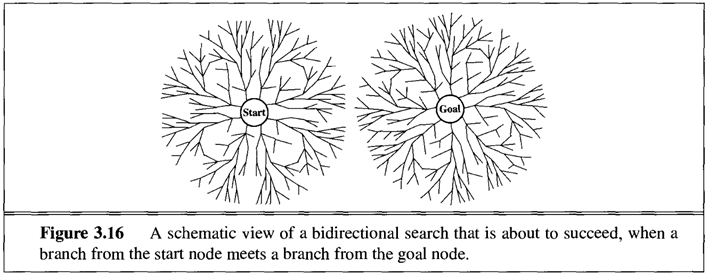
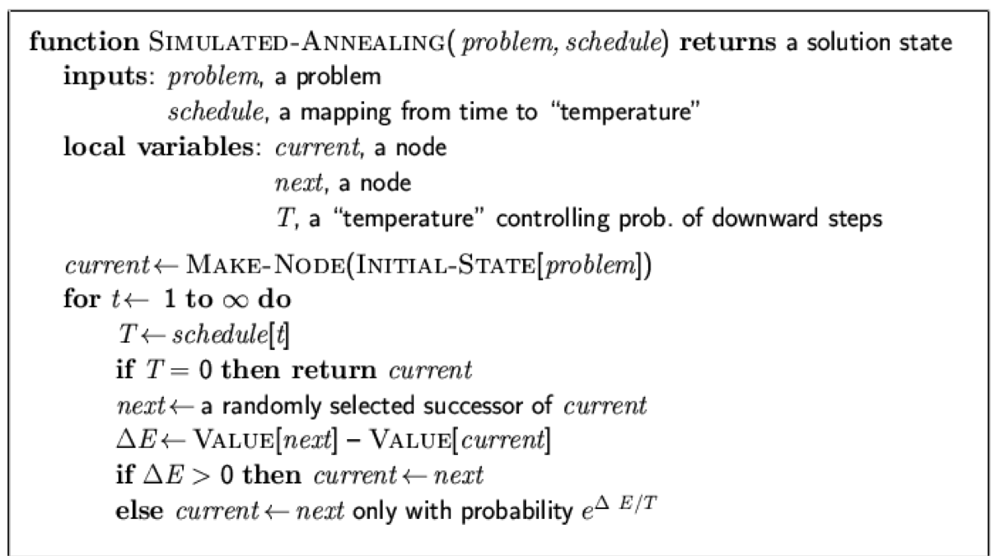
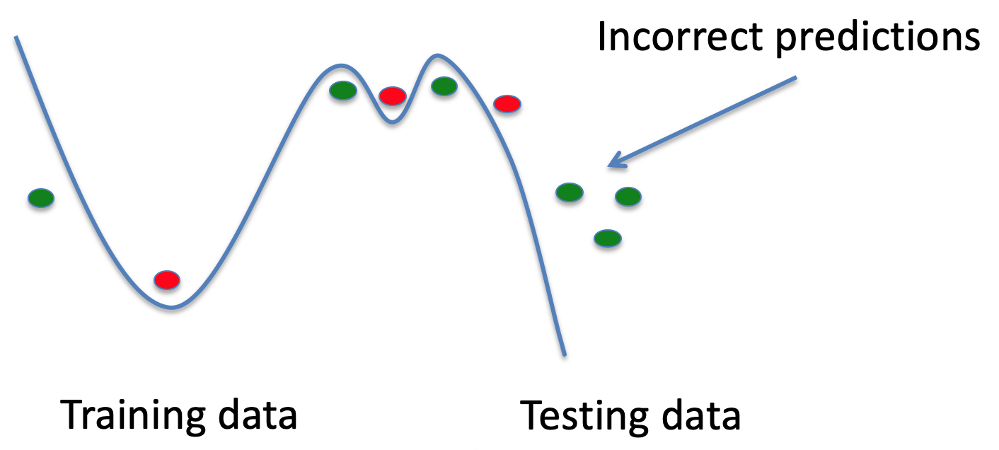

Intelligent Systems
Matthew Barnes, Mathias Ritter
Intro 5
Classical AI 6
Blind Search 6
Problem Types 6
Single-state Problem Formulation 8
State vs Nodes 10
Search Strategies 10
Searching using Tree Search 10
Repeated States 13
Bidirectional Search 14
Heuristic Search 14
Best-first Search 14
Greedy Best-first Search 14
A* Search 15
Admissible Heuristics 18
Consistent Heuristics 18
Dominance 18
Relaxed problems 18
History and Philosophy 18
Local Search 21
Hill-climbing Search 21
Simulated Annealing Search 23
Local Beam Search 24
Genetic Algorithms 25
Constraint satisfaction problems 26
Adversarial Games: Minimax 34
Alpha-beta Pruning 39
Planning 43
Recent Advances in AI 51
Classification 51
Decision Trees 51
Entropy 52
Conditional Entropy 54
Information Gain 54
Nearest Neighbour 57
Neural Networks 63
Perceptrons 63
Perceptron: Example 64
Perceptron: Rewriting the Activation Function 65
Perceptron: Visualisation of the Activation Function 65
Perceptron: Defining Weights and Bias 66
Perceptron: Expressiveness 67
Perceptron: Training with the Delta-Rule (Widrow-Hoff
Rule) 68
Perceptron: Limits 68
Types of neurons (activation functions) 69
Multi-layered Neural Networks 70
Multi-layered Nets: Training 71
Further Issues of Neural Networks 71
Deep Learning 71
Supervised vs Unsupervised Learning 72
Offline vs. Online Learning 72
Generalisation & Overfitting 73
Training vs Testing 74
Reasoning 74
Bayes Theorem 74
Total Probability 75
Conditional Probability 75
Bayes’ Rule 76
Example: Monty Hall Problem 76
Example: HIV test problem 77
Bayesian Belief Update 78
Complex Knowledge Representation 79
Joint Distribution 79
Independence 81
Bayesian Networks 81
Properties of Bayesian Networks 82
Pros and Cons of Bayesian Networks 83
Decision Making 83
Bandit Theory 83
Multi-armed Bandit (MAB) Model 85
MAB: Epsilon-first Approach 85
MAB: Epsilon-greedy Approach 86
MAB: Epsilon-first vs. Epsilon-greedy 86
Other Algorithms 86
Performance of Bandit Algorithms and Regret 86
Extensions of the Multi-armed Bandit 88
Reinforcement Learning & Markov Decision Process 88
Reinforcement Learning 90
States, Actions and Rewards 91
Temporal Difference Learning 91
Q-Learning 94
Markov Decision Processes (MDP) and Markov Chain 95
Monte Carlo Simulation (multi-armed bandits) 98
Extensions of Reinforcement Learning 100
Mathematical techniques (not examinable) 101
Functions, Limits, Derivatives 101
Continuity 101
Discontinuity 101
Derivatives 102
Linear combinations of functions 102
More derivative rules 102
Vectors 103
What is a vector? 103
Norm 103
Scalar product 103
Linear independence 103
Basis 103
Linear maps 104
Matrices 104
Scalar fields 105
Vector fields 105
Matrices 105
Partial derivatives 105
Gradient descent 105
Application, optimisation and regression problems 105
TL;DR 105
Classical AI 106
Blind Search 106
Heuristic Search 108
History and Philosophy 108
Local Search 109
Constraint satisfaction problems 110
Adversarial Games: Minimax 112
Alpha-beta Pruning 112
Planning 112
Recent Advances in AI 114
Classification 114
Decision trees 114
Nearest Neighbour 114
Neural Networks 115
Reasoning 116
Decision Making 117
Bandit Theory 117
Reinforcement Learning & Markov Decision Process 118
Intro
-
Current problems/challenges AI is facing:
- Ethics
-
AI might not work in the same way as the human brain and we
don’t know exactly how the human brain works
-
Specific AI is better/easier to create than a general
purpose AI
-
AI lacks life experience
-
AI might replace human jobs
-
AI might need a lot of computational power which requires a
lot of space
- Fear of AI
-
The main volume that covers the material is...
-
... of which you can download by clicking the link.
Classical AI
Blind Search
-
Blind search is a form of search which is applied in a
state space represented as a tree
-
There is always going to be a trade-off between speed,
memory usage and optimality
-
The optimality is defined by a cost function
Problem Types
-
There are four types of problems in classical AI:
|
Problem name
|
Properties
|
Example
|
|
Single-state problem
|
-
You always know what state it is in, at any
time during the problem.
|
The shortest path problem.
This is deterministic because when you input
the same graph, starting point and ending point,
you’ll always get the same shortest
path.
This is observable because you can always see
where you’re going.

|
|
Sensorless / multi-state problem
|
-
Deterministic
-
Non-observable
-
The initial state could be anything; this
requires a general solution that works for
all inputs.
|
Guessing someone’s random number.
This is deterministic because the solution will
always be the same number that your friend
picked (e.g. if they pick ‘6’, the
solution will always be ‘6’, it
can’t be different in any other
run).
Guessing numbers like 5 or 12 are only
solutions for 2 possibilities. Since you
don’t know the number to guess,
you’ll need a solution that satisfies
every number (like saying their number is
“x”).

|
|
Contingency problem
|
-
Nondeterministic
-
Partially observable (maybe)
-
Nondeterministic means that, even with the
same input, the action might perform
differently (this is due to things like race
conditions, random numbers etc.)
-
Partially observable means that you
can’t view the whole state; only parts
of it.
-
Basically, you don’t really know
enough until you do something. Once
you’ve performed an action, you see a
reaction, and you use that reaction (and
more actions) to eventually solve the
problem.
|
A piñata (even though it’s not a
computer science problem, it explains
nondeterministic and partially observable
well).
This is nondeterministic because you may not
hit the piñata. If you tried multiple
times, you’ll miss sometimes and hit the
other times. In a more technical sense, the
actions will randomly give the result of hit or
miss, therefore the solution to this problem is
‘n’ number of swings, where
‘n’ is a random number.
This is partially observable because you know
that the piñata is somewhere in-front of
you (unless everyone spins you around, then
it’s non-observable). You just don’t
know where exactly. You will find out some
information once you swing your bat, though. If
you hit it (solve the problem), you’ll
feel it hit your bat. If you miss, you’ll
know that the piñata is not where you
swung.

|
|
Exploration problem
|
-
You don’t even know what effect your
actions have, or how big the problem
is.
-
Therefore, you need to
‘explore’ the environment before
you try to solve the problem.
|
Robot exploration.
In this problem, a robot looks around using
actions and maps out the area it’s
in.
This has an unknown state space because the
robot has no idea where they are, but
they’re using their actions (such as
cameras, touch-sensitive peripherals etc.) to
find out and map out their environment.

|
Single-state Problem Formulation
-
A problem (that has one state at a time) is defined by four
items:
|
Item name
|
Description
|
Example
|
|
Initial state
|
The state we start off at
|
When you start a chess game, the initial state
is always:

|
|
Actions or successor function
|
The transitions from one state to the
next
|
When you move a piece in chess, the state goes
from one to the other:

|
|
Goal test
|
The condition that, when true, means the
problem is done
Explicit: “board in state x”
Implicit: “check-mate”
|
When the opponent’s king is in
check-mate:

|
|
Path cost
|
A variable that should be reduced where
possible to get the optimal solution
|
There are multiple path costs that a chess
algorithm can adopt.
One could be ‘number of opponent
pieces’. This would make the algorithm
aggressive, since it would try to reduce the
number of opponent pieces as much as it
can.
Another could be ‘number of moves
taken’. This would make the algorithm more
strategic, achieving a checkmate in the least
amount of moves.
|
State vs Nodes
-
A state is a representation of a physical
configuration.
-
A node is a data structure constituting part of a search
tree used to find the solution.
-
A state is a property of a node.
-
A node has the properties “state”,
“parent”, “action”,
“depth” and maybe “cost”.
Search Strategies
-
Strategies are evaluated with the following factors:
-
completeness - does it always find a solution if one exists?
-
time complexity - how the number of nodes generated (and time taken) grows
as the depth of the solution increases
-
space complexity - how the maximum no. of nodes in memory (space
required) grows as the depth of the solution increases
-
optimality - does it always find a least-cost solution?
-
Time and space complexity are measured in terms of:
-
b: how many children each node can have in the search tree
(maximum branching factor)
-
d: depth of the least-cost (optimal) solution
-
m: maximum depth of the state space (could be
infinite)
Searching using Tree Search
-
To find the solution to a problem, you need to find a path
from the initial state to the state where the goal test
returns true.
-
This is most commonly achieved using a type of tree
search.
-
There are four kinds of tree search algorithms used for
this.
|
Tree search
|
Description
|
Example / Animation
|
|
Breadth-first search
|
In breadth-first search, all of the nodes at
the current depth level are searched before
moving onto the next depth level.
This is complete (assuming the branching factor
isn’t infinite), even with infinite depth
or loops.
Only problem is, the space complexity is
terrible.
However, breadth-first search is optimal (finds
the least-cost solution) if the step cost is
constant. This is true because it finds the
shallowest goal node.
|
Complete?
|
Yes, if b (branching factor) is
finite
|
|
Time?
|
O(bd+1)
|
|
Space?
|
O(bd+1)
|
|
Optimal?
|
Yes, if step cost is
constant
|
|

|
|
Depth-first search
|
In depth-first search, it starts at the root
and goes all the way down to the far-left leaf,
then backtracks and expands shallower
nodes.
The space complexity is great (it’s
linear) because branches can be released from
memory if no solution was found in them.
However, it is not complete if the tree has
loops since the search is going to get stuck in
the loop and will never be able to exit it, or
if the depth is infinite as it’ll just
keep going down one branch without
stopping.
Depth-first search is not optimal because it
searches down the furthest branch and could miss
shallower goal nodes.
|
Complete?
|
No, if depth is infinite (or
has loops) it’ll go on
infinitely
|
|
Time?
|
O(bm)
|
|
Space?
|
O(bm)
|
|
Optimal?
|
No, because deeper solution
might be found first
|
|

|
|
Depth-limited search
|
It’s the same as depth-first search, but
there’s a depth limit (n), and anything
below that depth limit doesn’t
exist.
|
Complete?
|
No, because the solution might
be deeper than the limit
|
|
Time?
|
O(bn)
|
|
Space?
|
O(bn)
|
|
Optimal?
|
No, because deeper solution
might be found first
|
|
Limit: 2

|
|
Iterative deepening search
|
This is an applied version of depth-limited
search, where we start from depth limit 0 and
increment the depth limit until we find our
goal.
We do this to combine depth-first
search’s space efficiency with
breadth-first search’s completeness.
Although we get those benefits, IDS is a little
bit slower than depth-first.
|
Complete?
|
Yes
|
|
Time?
|
O(bd)
|
|
Space?
|
O(bd)
|
|
Optimal?
|
Yes, if step cost is
constant
|
|
Goal: Node 7

|
Repeated States
-
Remember that when searching a graph, you need to be able to spot repeated states. If not, your
implementation could go down unnecessary paths, or even go
through infinite loops!
Bidirectional Search
-
A bidirectional search does two searches, one at the
initial state and one at the goal state, and they keep going
until they meet in the middle.
-
The reason for this is because it’s quicker, bd/2 + bd/2 is much less than bd
-
At each iteration, the node is checked if it has been
discovered by both searches. If it has, a solution has been
found.
-
However, this is only efficient if the predecessor of a
node can be easily computed

Heuristic Search
Best-first Search
-
We have a function f(n) where, for each node
‘n’, it returns its
“desirability” - or in other words it returns how good that state
is.
-
Then, we just go from one node to the next, looking for the
most desirable one.
-
This also works for the reverse, using a “cost”
function.
-
There are two special cases for this:
-
Greedy best-first search
- A* search
Greedy Best-first Search
-
It’s just like best-first search, except our function
is a heuristic, so f(n) = h(n)
-
For example, h(n) could just be the linear straight-line
distance between node n and the goal.
|
Complete?
|
No – can get stuck in loops like depth
first if heuristic is bad
|
|
Time?
|
O(bm), but a good heuristic can give dramatic
improvement
|
|
Space?
|
O(bm) -- bad, keeps all nodes in memory
|
|
Optimal?
|
No
|
-
The animation above uses greedy best-first search on a
graph.
-
The heuristic function, h(n), is just the straight-line
distance from node ‘n’ to the goal.
-
Note how it’ll always pick the heuristic of the
smallest cost.
-
Notice how only the heuristic is visible. The actual cost
of travelling through the paths are abstracted.
-
Sometimes, this is OK. But what if the paths at the bottom
had really big costs, like 546, 234, 783 etc. and the paths
at the top had really low costs like 6, 3, 2 etc.? This
solution would be really bad, and the heuristic
wouldn’t be suitable.
A* Search
-
Like greedy best-first search, but with an extra
function.
-
f(n) = g(n) + h(n) where:
-
g(n) is the cost to get up to that node n.
-
h(n) is the heuristic cost of n to the goal node.
-
f(n) is the estimated cost of taking the path from the
start to n and then to the goal node.
|
Step #
|
Description
|
Illustration
|
|
1
|
This is the graph we’ll use A* on.
We’ll go from node 0 to 6.
The black numbers are the weights of the paths, the green numbers are the heuristic h(n) and the red numbers will be f(n), which is the sum of the weight up to that
node and it’s heuristic.
The blue nodes are unvisited (open), the red nodes are visited (closed) and the green node will be the current node we’re
on.
|

|
|
2
|
First, we look at the adjacent nodes. We need
to calculate their f(n)!
For node 1, we add g(1) and h(1), which is 45 +
317, which is 362.
For node 2, we add g(2) and h(2), which is 56 +
242, which is 298.
|

|
|
3
|
We need to pick a node with the least
f(n).
Right now, it’s 2, so we pick 2.
|

|
|
4
|
Now we need to find the f(n) of the adjacent
nodes of 2!
Firstly, 3. g(n) is 56 + 25, because it’s the cost of going from the
starting node up to that node. h(n) is 161, so
adding them together gets 242.
Second, 5. Again, it’s g(n) + h(n), which
is 246.
|

|
|
5
|
Now we need to pick the node of the lowest
f(n)!
This would be node ‘3’, so we go
with 3.
|

|
|
6
|
We calculate f(n) for 4 and 6, which are 339
and 141, respectively.
|

|
|
7
|
The next smallest unvisited f(n) is the goal
node, 6. Once we’ve discovered 6, we can
map out a path from the goal 6 to the start
0.
The shortest path is 0, 2, 3, 6.
|

|
-
If C* is the optimal path, then A* will never search
through a node n where f(n) > C*, but it will search
through all nodes where f(n) < C*.
-
A* is optimally efficient, meaning that no other algorithm
is guaranteed to expand fewer nodes than A* (unless there
are any tie-breaking nodes).
|
Complete?
|
Yes (unless there are infinitely many nodes
with f ≤ f(G) )
|
|
Time?
|
Exponential (in length of optimal
solution)
|
|
Space?
|
Keeps all (expanded) nodes in memory
|
|
Optimal?
|
Yes, if the heuristic is admissible
|
Admissible Heuristics
-
A heuristic that is admissible, or
“optimistic”, is a heuristic that always guesses
better than reality.
-
If h(n) is a heuristic function from n to the goal node,
and h*(n) is the optimal solution from n to the goal node,
then if h(n) ≤ h*(n), then h(n) is admissible.
-
An admissible heuristic never overestimates the true cost
of the solution.
Consistent Heuristics
-
A consistent heuristic is a heuristic that’s always
shorter than any detour.
-
For example, let’s take this graph:
-
To go from n to G, we could take the path h(n). However, we
could also take a detour and do c(n, a, n’) to go to
n’, then do h(n’) to get to G.
-
If h is a consistent heuristic, then h(n) will always be
shorter than c(n,a,n’) + h(n’).
Dominance
-
If h2(n) >= h1(n) for all nodes of n, then h2 dominates h1.
-
If they’re both admissible, then h2 is better for
search, because h2 is closer than h1 to the true
value.
Relaxed problems
-
A relaxed problem is a mutation of an existing problem by
making it easier by placing fewer restrictions on the
actions.
-
You can use the optimal solution to a relaxed problem as an
admissible heuristic for the original problem.
History and Philosophy
-
Turing and Bletchley Park
-
During WWII, Alan Turing worked on code-breaking at
Bletchley Park.
-
Used heuristic search to translate Nazi messages in real
time
-
With others, e.g., Jack Good and Don Michie, he speculated
on machine intelligence, learning…
-
Much of this remained secret until after the war.
-
The military has retained a strong interest in AI ever
since…
-
1943: McCulloch & Pitts model of artificial boolean
neurons.
-
First steps toward connectionist computation and
learning
-
1950: Turing’s “Computing Machinery and
Intelligence” is published.
-
First complete vision of AI.
-
1951: Marvin Minsky builds the first neural network
computer
-
The Dartmouth Workshop brings together 10 top minds on
automata theory, neural nets and the study of
intelligence.
-
Conjecture: “every aspect of learning or any other
feature of intelligence can in principle be so precisely
described that a machine can be made to simulate
it”
-
Ray Solomonoff, Oliver Selfridge, Trenchard More, Arthur
Samuel, John McCarthy, Marvin Minsky, etc.
-
Allen Newell and Herb Simon’s Logic Theorist
-
For the next 20 years the field was dominated by these
participants.
-
Great Expectations (1952 - 1969)
-
Newell & Simon imitated human problem-solving
-
Had success with checkers.
-
John McCarthy (1958-) invented Lisp (2nd high-level
lang.)
-
Marvin Minsky introduced “microworlds”
-
Collapse in AI research
-
Progress was slower than expected.
-
Some systems lacked scalability.
-
Combinatorial explosion in search.
-
Fundamental limitations on techniques and
representations.
-
Minsky and Papert (1969) Perceptrons.
-
AI Revival (1969 - 1970s)
-
Exploiting encoded domain knowledge
-
DENDRAL (Buchanan et al. 1969)
-
First successful knowledge-intensive system (organic
chemistry/mass spec data).
-
MYCIN diagnosed blood infections (Feigenbaum et al.)
-
Introduction of uncertainty in reasoning.
-
Increase in knowledge representation research.
-
Logic, frames, scripts, semantic nets, etc., …
-
Marr’s (1980) posthumous Vision advances vision,
neuroscience and cog. sci. after he dies young
-
AI engages with cognitive philosophy:
-
Dennett’s (1981) Brainstorms and (1985) Mind’s
I (with Hofstadter)
-
Fodor’s (1983) Modularity of Mind
-
Chuchland’s (1984) Matter & Consciousness
-
Clark’s (1989) Microcognition
-
Port & van Gelder’s (1995) It’s About
Time
-
Connectionist Revival (1986 -)
-
Parallel distributed processing (Rumelhart & McClelland
‘86)
-
Multi-level perceptrons and backpropagation learning
-
Language, reasoning, perception, control + a little
mystery
-
Robust behaviour, graceful degradation
-
No representations? Sub-symbolic AI…
-
90s: Elman pioneers layered recurrent nets
-
90s: Fully recurrent networks and robot control (e.g.,
Beer)
-
Ultimately… “neural” networks as
data-mining, statistics…
-
Rodney Brooks and other roboticists challenge the
formalist, “representational” orthodoxy
-
Elephant don’t play chess, Brooks
-
Why not the whole iguana?, Dennett
-
Nevermind the blocksworld, Cliff
-
Situated, Embedded, Embodied cognition
-
Inspired by simple insects, rather than chess and
logic
-
Anti-representationalist, anti-reasoning,
anti-generality
-
Evolutionary robotics, artificial life, “the new
cybernetics”
-
Intelligent Agents (1995 -)
-
Combined whole organism perspective with a rational
utility-maximising framework borrowed from economics.
-
A response to nouvelle AI?
-
An empty label?
-
A hybrid? A bolt-hole for formalists? A
revolution?
-
“How does an agent act/behave embedded in real
environments with continuous sensory inputs”
-
Data, Data, Everywhere (2000 -)
-
Massive amounts of raw power and raw data fuel advances in
machine learning:
-
Eigenfaces
-
Corpus linguistics
-
Kernel methods
-
Computational learning theories
-
Offline vs. Online AI?
-
Pattern Recognition in a Bucket?
Local Search
-
So far we have been looking at searches for an optimal
path
-
However, sometimes only the goal state matters
-
It is irrelevant how you get to this state because the goal
state itself is the solution
-
For these kind of problems the state space is the set of
complete configurations
-
We will look for a configuration that satisfies certain
constraints
-
For example, in the n queens problem the constraint is that
no two queens can be on the same row, column or
diagonal
-
To find a solution we use local search algorithms
-
We have a single current state which we try to
improve
-
For instance, for the n queens problem we could go through
states (configurations) like this:
-
Let’s look at some algorithms
Hill-climbing Search
-
Hill-climbing search is one of those algorithms that tries
to find the solution of a problem by gradually improving an
initial state
-
This requires that we have an objective function that
determines how good each state is, i.e. that computes the
fitness of each state
-
The algorithm works as follows
-
We will start at some (possibly random) initial state and
let this state be the current state
-
Then we will check the neighbour of the current state
-
The neighbour state is the highest valued successor of the
current state, determined by the objective function
-
We are not going to check any states which are further away
than our neighbour
-
If the value of this neighbour state is higher than the
current state we will assign the neighbour state to the
current state and go back to the last step
-
If the value of the neighbour state is lower than the
current state we will stop and return the current state as
the solution
-
This is because there is no better state within our
neighbours that we can reach
-
If you would like to see some pseudo code, here it
is:
-
The main problem of this algorithm is that it can get stuck
at a local maximum if you use certain initial start
states
-
This is because of the way the algorithm works: It improves
intermediary solutions but stops as soon as it has reached a peak
-
However, sometimes you have to go through some worse
intermediary solutions in order to find the global
maximum
-
I will illustrate this as a graph
-
The arrows illustrate in what direction the algorithm is
going to improve the current solution
-
If you start in the red area, you will end up at the local maximum
-
However, if you start in the green area, you will end up at
the global maximum
-
To show how big this problem is, take the 8-queens
problem
-
For random initialisation of the start state, hill climbing
gets stuck 86% of the time!
Simulated Annealing Search
-
Simulated annealing is an algorithm that tries to solve the
main problem of hill climbing
-
The idea is to sometimes allow “bad” moves (in
contrast to hill climbing) but gradually decrease the
likelihood of making such a “bad” move
-
In the optimal case we will use the “bad” moves
to escape from local maxima
-
The probability of taking a bad move is controlled via a so
called “temperature”
-
At the start the temperature will be high, meaning that bad
moves are likely to happen
-
Over time we are going to reduce the temperature / cool
down, meaning that bad moves are less likely to happen
-
The algorithm works as follows
-
We will start at some (possibly random) initial state and
let this state be the current state
-
We will check if the temperature is 0
-
If it is 0 then we will return the current state as the
solution
-
We will randomly select a successor of the current node as
the next node
-
We will check if the next node is better or worse than the
current node
-
If it is better, we will select it, i.e. assign it to the
current node
-
If it is worse, we will only select it with a probability
denoted by the temperature
-
We will go back to the second step

-
If the temperature decreases slowly enough, then simulated
annealing search will almost certainly find a global
optimum
-
The time complexity is exponential in the problem size for
all non-zero temperatures
-
Some use cases are VLSI layout, airline scheduling,
training neural networks
Local Beam Search
-
The idea of local beam search is to keep track of k states
rather than just one
-
K is called the beam width
-
The algorithm works as follows
-
We start with k randomly generated states and let them be
the current states
-
If any of those current states is the goal state then
return this state
-
Otherwise, generate all their successors let the k best children
be the current states
-
Go back to step 2
-
This is like breadth-first search with the difference that
by keeping only the k best children
Genetic Algorithms
-
At the beginning, we start with k randomly generated
states
-
These are called the population
-
A state is represented (encoded) as a string over a finite
alphabet
-
Often it is a string of 0s and 1s
-
We need an objective function (fitness function) to
“rate” states
-
A higher value means that the state is better
-
A successor state is generated by combining two parent
states
-
Methods for generation are selection, crossover and
mutation
-
Let’s look at an example for the 8-queens
problem:

-
The numbers indicate the positions of the queens
-
The nth number = the nth row
-
The number itself notates the column
-
The fitness function is the number of non-attacking pairs
of queens
-
The minimum is 0, the maximum is 8 x 7/2 = 28
-
The percentage next to this value indicates how good the
solution is compared to other solution of the
population
-
For the first one: 24/(24+23+20+11) = 31%
-
For the second one: 23/(24+23+20+11) = 29%
- etc
-
Let’s look at the following selection and cross-over
step graphically:
Constraint satisfaction problems
-
In a standard search problem, the state is viewed as a
black box
-
A state can be any data structure that supports
-
a successor function
-
an objective function (fitness function)
-
and a goal test
-
In CSP (constraint satisfaction problems) we will define
the data structure of the state
-
In particular, a state is defined by variables with values from the domain
-
In the goal test we will use a set of constraints
-
The constraints specify the allowable values for the
variables
-
Some examples are the graph colouring problem and the
n-queens problem
-
Now we will look at the example of map colouring
-
In map-colouring we try to colour regions with three
different colours such that adjacent regions have a
different colour
-
For this map, the problem is defined as follows:
-
Variables are the regions: WA, NT, Q, NSW, V, SA, T
-
Domains are the three colours:
-
Constraints: adjacent regions must have different
colours
-
For example, WA and NT cannot have the same colour
-
Solutions are complete and consistent assignments
-
Complete: Every variable is assigned a value
-
Consistent: No constraint is violated
-
This is an example solution for the problem:
-
Clearly, every region has a colour and no two adjacent
regions have the same colour, so this solution is complete and consistent
-
We can also generalise this problem as a constraint
graph
-
The nodes are the variables and the edges are the
constraint
-
No two connected nodes can have the same assignment
-
In addition, the resulting graph is a binary CSP because
each constraint relates two variables, i.e. each edge
connects two nodes
-
CSPs come in different variants
-
If the CSP has discrete variables
-
We have variables and the domain size is
 , therefore there exist complete assignments
, therefore there exist complete assignments
-
Examples are boolean CSPs, including boolean satisfiability
(SAT, kind regards from theory of computing) which is NP-complete
-
and the domain is infinite
-
Examples for infinite domains are integers and
strings
-
An example for such a CSP is job scheduling where the
variables are the start/end days for each job
-
The constraints could be defined like this:
-
If the CSP has continuous variables
-
An example is start/end times for Hubble Space Telescope
observations
-
The constraints are linear constraints solvable in
polynomial time by linear programming
-
Constraints come in different variants as well
-
Unary constraints involve a single variable
-
For example, a certain variable cannot be equal to some
value
-
E.g. SA green
-
Binary constraints involve pairs of variables
-
For example, two variables must not be equal
-
E.g. SA WA
-
This is the type of constraints we used in our
map-colouring example
-
Higher-order constraints involve 3 or more variables
-
For example, the addition of two variables must be equal to
a third variable
-
E.g.
-
Some more real-world CSPs are
-
Assignment problems, e.g. who teaches what class
-
Timetabling problems, e.g. which class is offered when and
where
-
Transportation scheduling
-
Factory scheduling
-
Note that many real-world problems involve real-valued
(continuous) variables
-
Let’s start to develop an algorithm for CSPs
-
We are going to look at a straightforward approach and will
then fix/improve it
-
States are defined by the values assigned so far
-
The initial state is the empty assignment
-
The successor function assigns a value to an unassigned
variable such that there is no conflict
-
This function will fail if there are no legal
assignments
-
The goal test is that the current assignment is complete,
i.e. all variables have been assigned a value
-
This is the same for all CSPs
-
Every solution appears at depth n with n variables
-
In our first approach we will use backtracking search to
find the solution
-
This is conceptually very similar to depth-first search as
you will see
-
We will use recursion to implement backtracking
search
-
Our inputs are the current variable assignment and the
csp
-
The function will either return a solution or a
failure
-
If the assignment is complete then return the assignment
(solution)
-
This is a base case - we have found the solution!
-
Select any unassigned variable
-
It doesn’t matter which one you select first in order
to find a solution
-
However, it will matter for performance reasons as we are
going to explore later
-
For each value of all values in our domain
-
If the selected variable would be assigned this value: Is
it consistent with the assignment according to constraints,
i.e. does it not violate any constraints?
-
Add it to our assignments
-
Recursively call this function with the new assignments
set, and store whatever it returns as a result
-
If it didn’t return a failure (so it returned a
solution), then return the result
-
If it returned a failure, then remove this particular
assignment from our assignments set
-
This is the backtracking part of the algorithm
-
It means that we have gone down a path that didn’t
lead to a solution, therefore we are going to undo what we
have tried
-
Return a failure since we have already checked all values
for the unassigned variable
-
This is another base case - there doesn’t exist any
solution
-
The main difference between backtracking and DFS is how
they expand nodes
-
DFS expands all successors of a node at the same time, and
puts them on the fringe
-
Backtracking only expands one successor of a node and, if
necessary, will return to this node later to expand further
nodes, if available
-
Backtracking is the basic uninformed algorithm for
CSPs
-
Let’s improve this algorithm
-
Which variable should be assigned next?
-
In what order should its values be tried?
-
Can we detect inevitable failure early?
-
Improving means reducing the amount of search by pruning
the search tree
-
Let’s start with: Which variable should be assigned
next?
-
Improvement: Choosing the most constrained variable
-
It means choosing the variable with the fewest legal values
first
-
This is called a minimum remaining values (MRV)
heuristic
-
Because these are the variables that are most likely to
prune the search tree
-
In this example, after we coloured WA red, we want to
continue with either NT or SA because these are the most
constrained territories:
-
Further improvement: Choosing the most constraining variable
-
This is a useful tie-breaker among the most constrained
variables
-
It means choosing the variable with the most constraints on
remaining variables first
-
Similar reason: Because the variable involved in the most
constraints is most likely to prune the search tree
-
In this example, after we coloured SA blue and NT green, we want to continue with Q because it further
constrains the value of NSW
-
Now think about: In what order should its values be
tried?
-
Improvement: Least constraining values
-
Given a variable, assign the least constraining value to
it
-
That is the value that rules out the fewest values in the
neighbouring variables
-
We want to introduce as few restrictions as possible for
our neighbours
-
In this example, we are going to choose red for Q in order
to allow blue for SA
-
With these improvements so far, the 1000-queens problem is
already feasible
-
Now think about: Can we detect inevitable failure
early?
-
Improvement: Forward checking
-
We are going to keep track of remaining legal values for
all unassigned variables
-
Terminate search as soon as any variable has no legal
values
-
For example, we will terminate the search after 3
assignments have been made because there are no options
remaining for SA
-
However, we do not have early detection for all kind of
failures
-
For example, NT and SA cannot both be blue here:
-
We would eventually find this out via search, but there is
a faster way
-
Improvement (of forward checking): Arc consistency
-
We will check the consistency of connected nodes
-
Two connected nodes X → Y are consistent if and only
if for every value x of X there exists some allowed y
-
We will check all neighbours of X every time X loses a
value
-
In our map example, we have arcs between all neighbouring
regions, e.g. between NSW and SA
-
When NSW loses a value, we have to check all neighbours,
which is SA only:
-
If NSW is going to be red, then blue is a valid option for
SA
-
However, if NSW is going to be blue, we have no valid
option for SA
-
Therefore, we can rule out the blue option for NSW
-
Because NSW has just lost a value, we now need to check all
neighbours of NSW
-
V is such a neighbour we need to check

-
We can cross out the red option for V, otherwise there
wouldn’t be a valid option for NSW left
-
SA is the next neighbour we have to check
-
We can now see that we have a problem here: SA and NT both
have only blue remaining, which violates our
constraint
-
Therefore, we can already give up and detect the
failure
-
This is way earlier than if we just used forward
checking
-
A different approach to CSPs is to use local search
-
Hill climbing and simulated annealing typically work with
“complete” states, i.e. states where all
variables are assigned but some constraints are
violated
-
Therefore we have to allow constraint violations for
intermediary states until we reach the goal state
-
We will continuously select a conflicted variable and
change its assignment
-
We will select the variable to change randomly
-
We will select the value for this variable using the
min-conflicts heuristic
-
Choose the value that violates the fewest constraints
-
E.g. hill climb with the fitness function being equal to
the total number of violated constraints
-
For example, in this 4-queens problem we randomly select a
conflicting queen and move it in it’s column such that
we reduce the conflicts the most
-
The number of conflicts is evaluated by our fitness
function h
-
While we are not at a solution
-
Choose a random conflicted queen
-
Pick a row for this queen that has minimum conflicts
-
This strategy works surprisingly well on the n-queens
problem
-
It is almost independent of problem size due to the dense
solution space
Adversarial Games: Minimax
-
So far, we have concentrated on unopposed search
problems
-
Now we will look at some games with opponents
-
Game playing is a traditional focus for AI
-
We must take account of the opponent
-
Let’s take a look at the game of nim
-
We start with a pile of seven matches
-
Each player takes it in turn to take a pile of matches and
split into two differently-sized piles of matches
-
The last player who is able to make a move is the winner
-
This is a very small and simple game because there are few
legal states and few legal moves from each state
-
The game doesn’t last long (only a few turns)
-
Player who plays second has an unfair advantage
-
We can construct a tree representing all the states of the game
-
Our strategy is to always stay on the bold path, and to win
by reaching the state with the grey background
-
In general we will use game tree search to win
-
Initial state is the initial board state
-
Goal states are all the winning positions
-
There is one action for each legal move
-
The expand function generates all legal moves
-
The evaluation function assigns a score (fitness) to each
board state
-
Minimax search is form of game tree search
-
MAX is traditionally the computer player
-
The computer picks the moves that maximise his winning
chances
-
They pick moves that minimise the computer’s winning
chances
-
We can divide the game tree into MIN and MAX nodes
-
In Minimax search we are going to search to a given ply
(depth-limited search)
-
Reason is that the game tree usually is too large to
completely search it
-
We will evaluate the heuristic for leaf nodes and then
propagate the values towards the root of the tree
-
MAX nodes take the maximum of their child values because we
will make the best move we can
-
MIN nodes take the minimum of their child values because we
assume that our adversary makes the move that is worst for
us
-
We can write an recursive algorithm for minimax search by
defining functions for max and for min value
-
Here is an animated example
-
If we want to use this strategy for Nim we are going to use
an evaluation function that is
-
+1 for a winning move for MAX
-
-1 for a winning move for MIN
-
We have assigned the values this way by only looking at the
leaf nodes and then back-propagating the values
-
Since the root is +1 we can see that the computer (who is
second) always wins the game
-
Let’s take a look at some properties of minimax
search
|
Complete?
|
Yes (if the tree is finite)
|
|
Time?
|
O(bm)
|
|
Space?
|
O(bm) (depth-first exploration)
|
|
Optimal?
|
Yes (against an optimal opponent)
|
-
For chess, for “reasonable” games
-
Exaction solution completely infeasible
-
Evaluation functions are typically a linear function in
which coefficients are used to weight game features
-
It is unlikely that there is a perfect, computable
evaluation function for most games
-
Games with uncertainty (backgammon, etc) add notations of
expectation
|
Game
|
Evaluation Function
|
|
Noughts and Crosses
(or Tic-Tac-Toe for the foreigners)
|
The number of potential nought lines minus the
number of potential cross lines
|
|
Chess
|
c1 * material + c2 * pawn structure + c3 * king
safety + c4 * mobility …
Where c1 to c4 are some constants
(weights)
Each of those sub-functions (material etc.) are
other linear functions
|
-
Do you remember that I mentioned “search until a
given ply” earlier?
-
We cannot exhaustively search most game trees because they
are huge
-
Therefore, we can only search to some given ply depth
-
However, significant events may exist just beyond that part
of the tree we have searched
-
This is called the horizon effect
-
The further we look ahead the better our evaluation of a
position
-
If we are searching the game tree to a depth of n ply, what
happens if our opponent is looking n+1 moves ahead?
-
It might be the case that we are fucked have a problem
-
In order to counteract the horizon effect we can use the
following two techniques
|
quiescent search
|
-
Quiescent search is varying the depth limit
of the search
-
For noisy (interesting) states, the tree is
searched deeper
-
For quiet (less interesting) states, the
tree is not searched this far
-
We will use a heuristic function to
distinguish between noisy and quiet
states
|
|
singular extensions
|
-
Explore a move in greater depth if
-
One move is significantly better than the
others
-
There is only one legal move
|
-
The following graphic illustrates the importance of ply
depth in chess
-
The branching factor of a game is the number of actions
which can be chosen
-
Nim (our first example) has a very low branching factor,
but many games do not
-
Chess: about 36
-
Go: about 200
-
This significantly affects the complexity of decision
making with increasing tree depth
Alpha-beta Pruning
-
We are now going beyond minimax
-
We have strong and weak methods to improve minimax
-
Strong methods take account of the game itself
-
E.g. board symmetry of tic tac toe
-
Weak methods can apply to any game
-
One of those is called alpha-beta pruning
-
Before we are going to explore alpha-beta pruning we are
going to take a look at board symmetry of tic tac toe
-
A part of the full game tree looks like this:
-
However, some of those states are redundant: we can achieve
them easily by rotating the game board
-
The redundant states are marked red:
-
By removing the redundant states we can prune the search
tree a lot
-
However, not every game allows for pruning this way,
therefore we need a more general method to reduce the amount
of search…
-
So now we will dive into alpha-beta pruning
-
Minimax explores the entire tree to a given ply depth
-
It evaluates the leaves
-
It propagates the values of the leaves back up the
tree
-
We have seen this procedure in the last chapter
-
Alpha-beta pruning performs DFS but allows us to
prune/disregard certain branches of the tree
-
Let’s define alpha and beta
-
Alpha represents the lower bound on the node value. It is
the worst we can do
-
It is associated with MAX nodes
-
Since it is the worst, it never decreases
-
Beta represents the upper bound on the node value. It is
the best we can do
-
It is associated with MIN nodes
-
Since it is the best, it never increases
-
If the best we can do on the current branch is less than or
equal to the worst we can do elsewhere, there is no point
continuing on this branch
-
Now we can define recursive functions for calculating alpha
and beta values
-
If you compare this with the minimax search functions we
defined earlier, you can see that these functions are very
similar to them
-
The difference is that when we check the successors we
return immediately if our alpha/beta values allow us to do
so
-
For the max-value function we return alpha if alpha
 beta because beta used to be the best we can do so
far, but we have just found a better value.
beta because beta used to be the best we can do so
far, but we have just found a better value.
-
For the min-value function we return beta if beta
 alpha because alpha used to be the worst we can do so
far, but we have just found a value that is even
worse.
alpha because alpha used to be the worst we can do so
far, but we have just found a value that is even
worse.
-
Let’s look at an example tree
-
Animation pls
-
Alpha-beta is guaranteed to give the same values as
minimax
-
The only difference is that we can reduce the amount of
search a lot
-
If the tree is ordered, the time complexity is
-
Minimax is
-
This means that we can search twice as deep for the same
effort
-
However, perfect ordering of the tree is not possible
-
If it was we wouldn’t need alpha-beta in the first
place
Planning
-
First define what a plan/planning is
-
A plan is a sequence of actions to perform tasks and
achieve objectives
-
Planning means generating and searching over possible
plans
-
The classical planning environment is fully observable,
deterministic, finite, static and discrete
-
Planning assists humans in practical applications such
as
-
Design and manufacturing
-
Military operations
- Games
-
Space exploration
-
What are the problems/difficulties of planning in the real
world?
-
In the real world we have a huge planning environment
-
We need to think about which parts of this environment are
relevant for our planning problem
-
We need to find good heuristic functions so that we can
reduce the amount of search
-
We need to think about how to decompose the problem
-
In order to define plans, we need a planning language
-
What is a good planning language?
-
It should be expressive enough to describe a wide variety
of problems
-
It should be restrictive enough to allow efficient
algorithms to operate on it
-
The planning algorithm should be able to take advantage of
the logical structure of the problem
-
Examples of languages are
-
The STRIPS(Stanford Research Institute Problem Solver)
model
-
ADL (Action Description Language)
-
What general language features do we want?
-
We have to represent states
-
We do this by decomposing the world in logical conditions
and represent a state as a conjunction of positive
literals
-
For instance, to represent that one plane is at Melbourne
and the other plane is at Sydney we can write
-
We will assume that everything that is not part of the
model does not exist, i.e. every other predicate not
included is false
-
For instance, the predicate “plane 3 is at
Sydney” is false because it is not in the model
-
This is called closed world assumption
-
We have to represent goals
-
The goal is a partially specified state
-
If the state contains all the literals of the goal then the
goal is satisfied
-
For example, the goal could be defined as
-
We do not care about where plane 1 is, and this goal would
be satisfied with the state given above
-
We have to represent actions
-
Actions consist of a precondition and an effect
-
If the precondition is true, we can use the action to
achieve the effect
-
Let’s define an example action Fly:
Action:
Precond:
Effect:
-
The precondition says “p must be a plane and from must be an airport and to must be an airport and p must be at from”
-
As you can see we also have to do something like type
checking in the precondition because the definition of the
action does not specify any types
-
The effect is then “p will not be at from and p will be at to”
-
How do actions affect states?
-
An action can be executed in any state that satisfies its
precondition
-
There needs to exist a substitution for all variables of
the precondition
-
For example for the action fly we need to substitute p,
from and to
-
When we execute the action it will change some part of the
state
-
We will add any positive literal in the effect of the
action to the new state
-
We will remove any negative literal in the effect of the
action from the new state
-
We will not change any literal that is not in the effect,
i.e. every literal not in the effect remains unchanged
-
For example, given the following state:
-
We can execute fly because the state satisfies the
precondition for p = p1, from = JFK and to = SFO:
-
Let’s execute
-
The effect is
-
And therefore the resulting state is
-
Note that we added and we removed due to the effect of the action
-
Let’s look at some more examples
|
Air cargo transport
|
|
Initial State
|
|
|
Goal State
|
|
|
Actions
|
|
|
|
|
|
|
Example plan
|
|
|
Spare tire problem
|
|
Initial State
|
|
|
Goal State
|
|
|
Actions
|

|
|
|
|
|
|
|
|
|
|
|
Example plan
|
|
-
How can we design an algorithm that comes up with a
plan?
-
There are two main approaches: forward and backward
search
-
Progression planners do forward state-space search
-
They consider the effect of all possible actions in a given
state
-
They search from the initial state to the goal state
-
Regression planners do backward state-space search
-
To achieve a goal, what must have been true in the previous
state?
-
They search from the goal state to the initial state
-
Progression algorithm is nothing more than any graph search
algorithm that is complete, e.g. A*
-
Regression algorithm
-
How do we determine predecessors of actions?
-
We have to find actions which will have an effect that
satisfies the pre-conditions of the current action
-
Actions must not undo desired literals
-
The main advantage is that only relevant actions are
considered
-
Therefore, the branching factor is often much lower than
forward search
-
Heuristics for progression and regression algorithms
-
Neither progression nor regression are very efficient without a good heuristic
-
The heuristic could be the number of actions needed to
achieve the goal
-
The exact solution is NP hard, therefore we should try to
find a good estimate
-
There are two approaches to find admissible
heuristic:
-
The optimal solution to the relaxed problem, e.g. where we
remove all preconditions from actions
-
The sub-goal independence assumption: The cost of solving a
conjunction of subgoals is approximated by the sum of the
costs of solving the sub-problems independently.
Partial-Order Planning (POP)
-
Progression and regression planning are totally ordered
plan search forms
-
They cannot take advantage of problem decomposition
-
Decisions must be made on how to sequence actions on all
the subproblems
-
We can improve this by specifying some actions which can be
done in parallel
-
For these actions it doesn’t matter which one comes
first
-
Let’s look at an example to understand this
concept
|
Shoe example
|
|
Initial State
|
|
|
Goal State
|
|
|
Actions
|
|
|
|
|

|
|
|
-
We want our planner to combine two action sequences
-
LeftSock and LeftShoe
-
RightSock and RightShoe
-
Therefore our planner can create a partially ordered
plan
-
A partially ordered plan contains actions which can be done
in parallel, without fixing which action comes first
-
Here is a comparison between a PO (partially ordered) and a
TO (totally ordered) plan:
-
Let’s look at POP states in a search tree
-
Each state in the tree is a mostly unfinished plan
-
At the root of the tree we have an empty plan containing
only start and finish actions
-
Each plan has 4 components
-
A set of actions (steps of the plan)
-
A set of ordering constraints
-
A set of causal links written as or A → p → B
-
A set of open preconditions
-
If the precondition is not achieved by any action in the
plan
-
For our shoe example, a final plan would look like
this:
-
Actions = {Rightsock, Rightshoe, Leftsock, Leftshoe, Start,
Finish}
-
Those are all the actions that are available plus a Start
and Finish action
-
Orderings = {Rightsock < Rightshoe; Leftsock <
Leftshoe}
-
Read as “Rightsock has to come before
Rightshoe”
-
Links = {Rightsock → Rightsockon → Rightshoe,
Leftsock → Leftsockon → Leftshoe, Rightshoe →
Rightshoeon → Finish, …}
-
Read as “Rightsock achieves Rightsockon for
Rightshoe”
-
When is a plan a solution, i.e. when is a plan final?
-
A consistent plan with no open preconditions is a
solution
-
A plan is consistent when there are no cycles in the
ordering constraints and no conflicts with the links
-
A POP is executed by repeatedly choosing any of the
possible next actions
-
Next, we are going to look at search in POP space
-
We will start with the initial plan that only
contains
-
Actions Start and Finish
-
No causal links
-
All preconditions in Finish are open
-
Picks one open precondition p on an action B
-
Generates a successor plan for every possible consistent
way of choosing action A that achieves p
-
More on how to generate a successor plan a bit later
-
We need to test if we have reached the goal
-
Why should we search in POP space rather than FOP
(fully-ordered) space?
-
The number of fully-ordered plans can be exponentially more
than the number of partially ordered plans
-
Look at the sock example above, there is one POP but 8
FOPs
-
Therefore, searching in space of POPs is much more
efficient because the search space is much smaller
-
Also, when the plan is executed, there is more flexibility
because there is no strict order of all actions like in a
FOP
-
How do we generate a successor plan (a successor node in
the search tree)
-
We have to add the causal link A → p → B
-
We have to add the ordering constraint A < B
-
If A is new we also add Start < A and A <
Finish
-
Try to resolve any conflicts between the new causal
link and all existing actions.
-
If A is new also try to resolve any conflicts between A and
all existing causal links
-
Here is a summary how to process POP
- Operators
-
Add link from existing plan to open precondition
-
Add a step to fulfill an open condition
-
Order one step with regards to another to remove possible
conflicts
-
Gradually move from incomplete/vague plans to
complete/correct plans
-
Backtrack if an open condition is unachievable or if a
conflict is irresolvable
Recent Advances in AI
Classification
-
We want to recognise the type of situation we are in right
now:
-
Credit card transaction: Is it a fraud or not?
-
Autonomous weapons: Should it shoot or not?
-
There are two main approaches, top-down and bottom-up
-
Top-down takes inspiration from higher abstract
levels
-
Bottom-up takes inspiration from biology like neural
networks
Decision Trees
-
A decision problem is a problem that can be represented as
a yes-or-no question.
-
How do we humans get an answer to such a decision problem,
like checking whether a person shown in a picture is a
professor or not?
-
We check certain attributes of the person shown in the
picture
-
For example clothes, beard, glasses, etc.
-
We check them in a certain order
-
We keep checking them until we are certain that we can make
a decision
-
Decision trees work exactly like that
-
The main idea is to check some attributes in some specific
order until the algorithm can make a yes/no decision
-
A decision tree takes a series of inputs defining a
situation, and outputs a binary
decision/classification
-
A decision tree spells out an order for checking the
properties (attributes) of the situation until we have
enough information to make a decision
-
It is a top-down classification algorithm as we start at
the root of the tree and work down towards reaching a
leaf
-
We use the observable attributes to predict the
answer/outcome
-
In which ordering do we check the attributes?
-
This is an important question as we want to check as least
attributes as possible to make a decision
-
We can achieve this by first checking those attributes from
which we learn the most
-
We want to gradually reduce our uncertainty until we can
make a decision
-
We want to do this as quick as possible
-
So we should choose the attribute first that provides the
highest information gain
-
This example decision tree is about a high or low risk of
getting an STD:

-
So why are the questions ordered in this particular
way?
-
For example, in the above example, why don’t we ask
about sinus tachycardia before asking about systolic blood
pressure?
-
The answer is because we learn a lot more about our input
by asking that question, so we ask it first.
-
This question provides the highest information gain
-
Alright, that’s pretty easy. But what if we have a
problem with 1000 attributes? Are we going to read each one
and pick out an order? We’ll be there all day!
-
Instead, we will define how to calculate the information
gain, which we will use to define the order of
attributes.
-
But first, we need to define the entropy and the
conditional entropy.
Entropy
-
Entropy is a measure of how much uncertainty there exists
in a system.
-
The equation goes like this:
-
Where we input a set of probabilities that represent our
problem X into H like and you get the entropy in “bits”.
-
A bit is simply a unit for entropy; the higher it is, the
more uncertain is the event. When we are certain, the
entropy is 0.
-
For example, if we have the following table for the weather
with respective probabilities:
|
City
|
Good
|
OK
|
Terrible
|
|
Birmingham
|
0.33
|
0.33
|
0.33
|
|
Southampton
|
0.3
|
0.6
|
0.1
|
|
Glasgow
|
0
|
0
|
1
|
-
Let’s calculate the entropy for all of the three
cities
|
Birmingham
|
P
|
log2P
|
P*log2P
|
|
Good
|
0.33
|
-1.58
|
0.53
|
|
OK
|
0.33
|
-1.58
|
0.53
|
|
Terrible
|
0.33
|
-1.58
|
0.53
|
|
|
|
SUM =
|
1.58 (bits)
|
|
Southampton
|
P
|
log2P
|
P*log2P
|
|
Good
|
0.3
|
-1.74
|
0.52
|
|
OK
|
0.6
|
-0.74
|
0.44
|
|
Terrible
|
0.1
|
-3.32
|
0.33
|
|
|
|
SUM =
|
1.29 (bits)
|
|
Glasgow
|
P
|
log2P
|
P*log2P
|
|
Good
|
0
|
-infinity
|
0
|
|
OK
|
0
|
-infinity
|
0
|
|
Terrible
|
1
|
0
|
0
|
|
|
|
SUM =
|
0 (bits)
|
-
What do these entropies tell us now?
-
Well, as defined before, the entropy denotes the
uncertainty in a system
-
If we look at the probabilities of the weather in
Birmingham, they are 0.33 for each type of weather.
-
That means if we were to predict the future weather based
on this data, we cannot be certain at all, i.e. we are very
uncertain about our prediction
-
This is reflected in the calculated entropy, which is
1.58.
-
High entropy means a lot of uncertainty, and this is the
highest of the 3 cities.
-
Now look at the probabilities of the weather in
Southampton. This time the probabilities are not distributed
equally
-
This means that if we were to predict the future weather
based on this data, we can surely be more certain compared
to Birmingham. However, we will still have some uncertainty
in our prediction
-
The entropy is 1.29, so the second highest.
-
Finally look at the probabilities of the weather in
Glasgow. The probability for terrible weather is one.
-
This means that if we were to predict the future weather
based on this data, we can be absolutely certain that the
weather is going to be terrible.
-
The entropy is 0, meaning we have no uncertainty in our
weather forecast.
Conditional Entropy
-
We have seen that the entropy denotes the amount of
uncertainty in a system.
-
Another measure which we will need later is the conditional
entropy.
-
The conditional entropy denotes a possible new level of
uncertainty, given that some other event is true.
-
It is defined as follows:

-
p(x, y) is the joint probability of two events, i.e. the
probability that both events are true
-
p(y | x) is the conditional probability, i.e. the
probability of y given that x is true
Information Gain
-
Now that we have defined the entropy and the conditional
entropy, we can finally define the information gain.
-
This will denote how much information we gain for some
prediction when we query a specific attribute.
-
It is defined as follows:
-
Y is the event that we want to predict and X is the
attribute
-
Another way to think of information gain is this:
let’s say you’re playing 20 questions and you
know the object is a type of fish.
-
If you ask some dumbass question like “Can it live in
water?”, you won’t learn anything new, because
they’ll almost always answer with
“yes”.
-
If you ask a really good question, like “Does it live
in fresh water?”, you’ll learn a lot from the
answer, so it has information gain.
-
Let’s look at one example
-
We want to predict whether a user will read an email
-
We have recorded the following data in the past:
-
Now we want to find out what the information gain would be
if we chose the attribute “Thread”
-
For the Thread attribute, we have recorded the following
read/skips behaviour
|
|
Reads
|
Skips
|
Row total
|
|
new
|
7 (70%)
|
3 (30%)
|
10
|
|
follow_up
|
2 (25%)
|
6 (75%)
|
8
|
|
|
|
SUM =
|
18
|
-
This table gives the probability that an email is going to
be read, or is going to be skipped, given that we know the
email is new or is a reply to another email.
-
To calculate the information gain for the event read of the attribute Thread, we need to calculate the following:
G(Read, Thread)
= H(Read) - H(Read | Thread)
-
First we need to calculate H(Read), the entropy of
Read
-
We have 18 emails in total, in 9 cases they are read and in 9
cases they are skipped
-
Therefore the probability for read and skip is 0.5
-
We have to consider exactly these two cases
-
Let’s calculate:
-
We also need to calculate H(Read | Thread), the conditional
entropy of read given that we know the thread.
-
We have to consider 4 cases because read/thread can be
true/false.
-
We will need the conditional probability, so remember the
following rule:
-
Let’s calculate:
-
Back to calculating G(Read, Thread)
-
So our information gain is 0.15
-
The higher this value is, the better
-
It cannot be below 0. 0 means we gain no information at
all.
-
After we have calculated the information gain for all
attributes (Length, Thread, Author) we will eventually come
up with this decision tree:
-
This means that Length has the highest information gain,
followed by Thread and Author
Nearest Neighbour
-
Let’s take a look at a different way of
classification.
-
Humans usually categorise based on how similar a new object
is compared to other known things, e.g. dog, cat, desk,
…
-
So we want to find an algorithm which does the same
-
Our algorithm needs to be able to identify the degree of
similarity
-
The idea is to define some geometric representation of the
data points
-
The degree of similarity = geometric distance between the
points
-
How to define the metrics?
-
Let’s start with an example and look at the map of
Southampton’s air quality:

-
We will pick out some areas (where we measure the air
quality) and can draw a line to separate the
“good” from the “bad” areas.
-
In many cases we only have some local information, i.e.
only some local points where we measure the air
quality
-
Now we want to predict the air quality of another
location
-
The main idea behind this prediction is that physically
close locations are likely to be similar.
-
We will choose the k nearest neighbours to predict the air
quality at this point
-
Let’s look at another example, a town that is on the
border of Belgium and The Netherlands
-
We want to predict a person’s nationality based on
the following data:

-
First we will be looking at a case where nearest neighbour
is wrong:
-
We are trying to predict the nationality of a person living
at the green marked spot
-
Because we only look for the very nearest neighbour, we
only find a person with Dutch nationality
-
Therefore we wrongly predict Dutch for the green marked spot
-
We can see on this map that the correct answer is
Belgian
-
In K-nearest neighbour we choose the K closest known
neighbours
-
We use majority voting to determine the outcome
-
As you can see in the example, it is crucial what the value
of K is
-
Let’s continue with our example, but this time we
choose K=5
-
This means that we choose the 5 nearest known persons and
make a decision based on the nationality of the majority.
-
Our 5-nearest neighbours are 4 Belgian and 1 Dutch
person
-
Because the majority is Belgian our prediction will be
Belgian
-
This time our prediction is correct, as you can see on the
map.
-
There are three big questions when it comes to K-nearest
neighbours:
-
How large should K be?
-
What distance metrics should be used?
-
Can we use anything other than majority voting?
-
How large should K be?
-
Unfortunately there is no general way to go
-
If k is too small, your output will be noisy
-
If k is too big, you lose all structural details
-
e.g. if k=all people, you predict everyone to be
Dutch
-
In practice, you try multiple values of K
-
What distance metrics should be used?
-
For geographical based problems like the last two examples,
we can use the euclidean/physical distance between two
locations
-
However, there are some other cases where the euclidean
distance is not obvious
-
Data points can have multiple dimensions
-
E.g. a sales person has an age and sold items
-
Age is between 0 and 100, sold items is between 0 and 1
million
-
The latter clearly dominates the former if we put this into
the euclidean space
-
Therefore we need to normalise the data first
-
Normalisation of data can be done by rescaling
-
We can make all dimensions values between 0 and 1
-
What should we do if the data is categorical?
-
Categorical data describes the membership of a group.
-
An example is country = United Kingdom, Austria, Hungary,
Greece, Spain, Thailand, ...
-
The groups are distinct and may be represented with a code
number but they can’t be ranked
-
The practical consensus is that we simply don’t use
kNN for these cases
-
kNN is typically good for using continuous data like
location coordinates (see the examples above)
-
Can we use any other distance metrics?
- Yes
-
We could use manhattan distance for example, like here (all
lines represent the same manhattan distance, except
green):
-
Can we use anything other than majority voting?
-
We can choose the median or average
-
We can also use weighted majority voting, i.e. some data
points will have more weight than others
-
We can set the weights in many different ways
-
For instance, we could prefer the closer data points rather
than the ones further away
-
Or we could weight them by their importance
-
There also exist other more specific voting rules
-
kNN is a simple example of lazy learning
-
The system does not maintain a generic model. Instead,
whenever there is an evaluation request on a new data point,
the system will only provide a (local) model for that
particular data (e.g., using distance metrics in k-NN)
Neural Networks
-
Decision trees and nearest neighbour were top-down
classification algorithms
-
Now we will look at a bottom-up approach: Neural
networks
-
Neural networks are inspired by how the human brain
works
-
Our main component will be the neuron
-
Each neuron takes some inputs and produces a single output
based on some activation function
-
There are different types of neurons, each type has a
different kind of activation function
Perceptrons
-
The first type of neurons we will be looking at is called a
perceptron
-
It will take several inputs x1, x2, x3, …
-
Each input will be multiplied by a corresponding weight w1,
w2, w3, …, which is a real number
-
It will produce a single binary output which is determined
by the activation function
-
For instance, a perceptron with 3 inputs looks like
this:
-
How is the activation function defined?
-
The activation function checks if the weighted sum of the
inputs is above some threshold value
-
The output of the activation function is binary, i.e.
either 1 or 0 depending on the threshold value
-
That’s all there is to how a perceptron works
Perceptron: Example
-
Let’s look at some example
-
Suppose the weekend is coming up, and you’ve heard
that there’s going to be a cheese festival in your
city. You like cheese, and are trying to decide whether or
not to go to the festival.
-
You make your decision by weighing up three factors
-
Is the weather good?
-
Does your boyfriend/girlfriend want to accompany you? (since we’re comp sci students, this isn’t
relatable)
-
Is the festival near public transit (you don’t own a
car)?
-
Those three factors can be represented by corresponding
binary variables x1, x2 and x3
-
Now, suppose that some of these factors are more important
than others. For instance, you might go without your
boyfriend/girlfriend and even take a taxi but you absolutely
hate bad weather
-
One way to do this is to choose some weights for the
factors:
-
Weather: w1 = 6
-
Boyfriend/Girlfriend: w2 = 2
-
Public transport: w3 = 2
-
Finally, suppose you choose a threshold of 5 for the
perceptron
-
This perceptron implements the desired decision-making model, outputting 1 whenever the weather is good
and 0 when the weather is bad. It makes no difference
whether your boyfriend/girlfriend wants to go or whether
there is public transport
-
By varying the weights and the threshold we can get
different models of decision-making.
-
For example, suppose we instead chose a threshold of 3.
Then the perceptron would decide that you should go to the
festival whenever the weather was good or when both the
festival was near public transport and your
boyfriend/girlfriend was willing to join you.
Perceptron: Rewriting the Activation Function
-
Back to our perceptron: We can simplify the activation
function, which is currently defined as
-
First, we will rewrite the sum into a dot product of two vectors x and w:
-
The second change is to move the threshold to the other side of the
inequality, and replace it by what’s known as the
perceptron’s bias, b = -Threshold
-
We can rewrite the activation function as follows:
-
You can think of the bias as a measure of how easy it is to
get the perception to output a 1. Or to put it in more
biological terms, the bias is a measure of how easy it is to
get the perceptron to fire.
-
For a perceptron with a really big bias, it's extremely
easy for the perceptron to output a 1. But if the bias is
very negative, then it's difficult for the perceptron to
output a 1.
Perceptron: Visualisation of the Activation Function
-
Graphically, we can imagine the activation function as
follows
-
If we only have one input, we’ll get an equation of a
line on a plane:
-
If we have multiple inputs, we will get a hyperplane
-
So in general, our perceptron can model any straight-line
(hyperplane) relationship between input(s) and the
output
-
The activation function will output a 1 if our function
computes a value above the line/hyperplane and 0 if the
value is on or below it
Perceptron: Defining Weights and Bias
-
How can we define the weights and the bias of a
perceptron?
-
Initially, we will use random weights and a random
bias
-
Then we will try to find weights/bias such that we can
model the linear relationship between inputs/output as
accurate as possible
-
We won’t get a perfect result because it’s very
unlikely that all data points lie on a straight line
-
Therefore we will try to find a line of best fit, which
goes through the centre of the cloud of points
-
This process is called linear regression
-
For instance, take the following scatter plot:
-
How do we get the line of best fit? How can we measure the
efficiency of a particular regression line?
-
There is a measure called “mean squared
error”
-
For every data point, we can measure the difference
(y-offset) between the data point and our line
-
We will then square this difference, repeat for all points
and calculate the average
-
This will give us a measure of how good our regression line
is
-
Minimising this value is the training method for optimising
weights/bias of the perceptron, at which we will look
later
-
For example, we could end up with a regression line that
looks like this:
Perceptron: Expressiveness
-
Continuing our basketball example, the perceptron predicts
“Is this person (based on the height) able to play
basketball or not?”
-
As mentioned earlier, for every input above the line it
will say “yes” and for every input below or on
the line it will say “no”:

-
What sorts of problems can it solve in general?
-
Well, it maps the input values to True or False, so it can
solve logic problems.
-
In fact, we can model a logic AND gate or a OR gate like
this:

Perceptron: Training with the Delta-Rule (Widrow-Hoff
Rule)
-
Now we will look into minimising the MSE (mean squared
error) of the perceptron
-
We want to train the perceptron by showing it examples and
somehow getting it to learn the relevant pattern
-
This is where the perceptron learning rule (delta rule,
Widrow-Hoff rule) comes in
-
It is defined as follows:
-
E is some error function, e.g. MSE
-
We will start with random weights
-
Then we present an example input to the neuron and
calculate the output
-
Then we compare the output to the target value (i.e. y) and
nudge each weight slightly in the direction that would have
helped to reduce the error
-
How much we adjust the weights is denoted by the learning
rate
-
We repeat this procedure until we are happy with the
performance
-
So this is a kind of gradient descent algorithm
Perceptron: Limits
-
A perceptron cuts its input space into a “high
output” region where it outputs a 1 and a “low
output” region where it outputs a 0.
-
The cut is linear (straight line, hyperplane) so the
perceptron can only solve linearly separable problems, i.e.
problems where the regions are linearly separable
-
This means that there are problems a perceptron can’t solve
-
For example look at the XOR gate
-
Where should we place the line? There is no position such
that we don’t get at least one value wrong
-
Or look at the map of Southampton’s air quality map:
We can’t place a line to seperate all good areas from
all bad areas:
-
What can we do to overcome this problem? We’ll see in
multi-layered networks
Types of neurons (activation functions)
-
There also exist other neurons other than the perceptrons we have seen so far
-
The difference is the type of activation function they
use
-
It should be 0 if x<= -0.5 at Piecewise-Linear Function
-
The sigmoid neuron is very popular, as we will see in
multi-layered networks
Multi-layered Neural Networks
-
One solution to overcome the limitations of a single neuron
is a multi-layered neural networks
-
Instead of having inputs feeding directly into output
neurons, let’s add some intervening hidden neurons in
between
-
The brain is certainly similar to that
-
A single perceptron divides the space into low vs high with
a single line, so multiple layers of perceptrons essentially
give us multiple lines to divide our space
-
Non-linear separation can be approximated by a set of
linear lines
-
A multi-layered net can look like this:
-
Note that we can have multiple hidden layers, not only
one
Multi-layered Nets: Training
-
Sounds good so far, but how can we train this complex black
box?
-
Because we could have multiple hidden layers, our delta
rule approach does not work anymore
-
Instead we need to backpropagate the errors
-
We will extend the delta rule:
-
Our error function E = sum of squared differences between
the actual and target output values
-
We will calculate the partial derivative of E with respect
to each weight
-
Therefore we need a differentiable activation
function
-
In practice we use the sigmoid function in this case
-
We can thus know which way we need to nudge each weight for
a given training example
Further Issues of Neural Networks
-
How fast should the learning rate be?
-
How many hidden neurons do I need for a given
problem?
-
Some guidelines for these problems are available but the
only reliable approach is to try out different values and
see how it goes
-
Other issues are
-
Large datasets
-
Large input space
-
Computational issues
Deep Learning
-
The main idea of deep learning is to transform the input
space into higher level abstractions with lower
dimensions
-
We have many layers of hidden layers, hence the name deep
learning
-
Each layer is responsible for a space transformation
step
-
By doing so, the complexity of non-linearity is
decreased
-
However, this is very expensive in terms of computational
power. For instance, we need to compute on GPUs or use grid
computing
Supervised vs Unsupervised Learning
-
In supervised learning, we use some training set for
learning purposes
-
The training set is a set of examples with correct
input-output pairs
-
Thus it contains labelled data: each input data is labelled
with its correct output
-
Here are some examples of training sets:
-
In unsupervised learning, there are no training sets and
thus no labelled data
-
We just predict the outcome of some input and there is no
correct output
-
There also exists semi-supervised learning, which is a
combination of both
-
However this is not covered by this module
Offline vs. Online Learning
-
In offline learning, all the inputs are available from the
beginning; the system can compute it all in one big chunk
-
In online learning, the inputs come into the system as some
stream; the system can work with one bit of input at a time,
implementing the model as they go
Generalisation & Overfitting
-
We want to have good performance on both training data and
never-seen-before data
-
It is called “overfitting” when we have high
accuracy on training data but low quality in
prediction
-
It means that our function is too specific/too complex and
thus will only work efficiently on the training data

-
Instead, we should aim to find a more general function that
also works well with the data it has never seen before
-
It might make some errors on the training data, but
it’s more important that it there is no great
difference between the performance on training data vs. the
data it hasn’t seen before
Training vs Testing
-
How can we know if our model is general enough?
-
In other words, how can we know if our model performs well
on the data it has never seen before?
-
We could do this by taking out some of the training data
and using it as testing data
-
We know what the outcome should be because the training
data is labelled
-
One issue is that we reduce the training data, which is a
big issue if the training data set is small in the first
place
-
We could also do this by separating the training data into
multiple sets and then use some sets for training, and some
sets for testing
-
This is called K-fold cross validation
-
We partition the training data into K disjunct
(non-overlapping) sets
-
We use k-1 sets for training and the kth one for
testing
-
We repeat this k times such that each partition is the
testing data once
Reasoning
-
Reasoning is about updating our belief model
-
There are different approaches to reasoning
-
One way is logic/rule based
-
We build up basic rules (axioms) using some form of
logic
-
We can then derive other rules from the above, which is
where the reasoning happens
-
Another way is stochastic reasoning
-
This means reasoning based on probabilities
-
One example is Bayesian reasoning, which we will explore in
more detail now
-
We are going to define Bayes’ Theorem, Bayesian
belief update and Inference in Bayesian networks
Bayes Theorem
-
We will define total probability, conditional probability
and Bayes’ rule
Total Probability
-
The total probability of an event B is defined as
follows:
-
The total probability for event B is the sum of the
probabilities for event B and all cases of event A
-
We can also rewrite this with conditional probability of B,
as we can see in the definition below.
Conditional Probability
-
The conditional probability of event B is defined as
follows:
-
P(A|B) means “the probability of event A given that
event B is true” and P(B|A) means “the
probability of event B given that event A is
true”
-
Why is the conditional probability defined like this?
Let’s look at some example
-
We have a bag with red and blue marbles, and we want to
know the probabilities of drawing a red/blue marble
-
We can visualise the probabilities for 2 consecutive draws
like this:
-
So what’s the probability of drawing a blue marble
and then another blue one?
-
Well, it’s a chance of ⅖ followed a chance of
¼ . We multiply the two probabilities and get the
result of 1/10.
-
Now define event A to be “draw a blue marble
first” and define event B to be “draw a blue
marble second”
-
We have just calculated P(A and B) = P(A) * P(B|A):
Bayes’ Rule
-
Bayes’ rule is defined as follows
-
Using the formulas for conditional probability, we can
derive Bayes rule
-
In the numerator we have P(A and B), which we can write as
P(A|B) * P(B)
-
In the denominator we have P(A)
-
So dividing these two probabilities will give us the
probability for B given that A is true
-
We can re-think Bayes’ rule as follows:
-
We can calculate the probability of our hypothesis based on
some evidence
-
The evidence are some events which we have observed
already
-
Don’t worry about this form yet because we will come
back to it later
Example: Monty Hall Problem
-
Suppose you can choose a door from a total of three
doors
-
There is a prize behind one door and behind the other two
doors there is a goat
-
The host of the show knows where the prize is
-
You choose door 1
-
The host opens door 2 and has a goat behind it
-
You are given a chance to swap with door 3
-
Now the question is, should you swap or should you stick
with your original choice?
-
We want to calculate P(win), the probability that you
win
-
P(win) if you choose to stick with door 1 is ⅓
because when you made your choice you picked one of the
three doors
-
What’s P(win) when we choose to swap to door 3?
-
We can use the law of total probability to find out:
-
Let B = win and A = the car is behind door 1. Then we
get:
-
-
is 0 because if the car is behind door 1 we
won’t win as we switched to door 3
-
is ⅓ because there exists 1 car and 2
goats
-
is 1 because if the car is not behind door 1 it can only be
behind door 3
-
is ⅔ because door 2 has been opened by the
host
-
So
-
The probability that we win if we switch is ⅔, so we
should definitely switch
Example: HIV test problem
-
We know the following about HIV lab tests:
-
99% sensitivity: If a patient is HIV+, then the probability
that the test has positive results is 99%
-
99% specificity: If a patient is HIV-, then the probability
that the test has negative results is 99%
-
HIV is rare in patients in our population: About 1 out of
1000 is positive
-
The situation is: A patient does a HIV test and gets a
positive result
-
What are the chances that the patient is indeed HIV+?
-
Let’s put this into maths
-
We know the following probabilities:
-
We want to calculate the following
-
We can use Bayes’ rule to calculate this:
-
As you can see, we are missing P(positive), but we can
calculate it using the rule of total probability:

-
Now we have all the values to calculate P(HIV+ | positive):
-
So as we calculated, it’s only around 9% that the
patient is HIV+ even if the test is positive!
-
Why is the result so counterintuitive?
-
You probably focus on the sensitivity of the test
-
You’re neglecting the background or base rate of HIV
prevalence
Bayesian Belief Update
-
In Bayesian reasoning, we always keep a belief model when we make our decisions
-
We use probabilities to capture uncertainty in our
knowledge
-
We also need to update our belief model after we have seen
some more evidence
-
How do we update our belief after each observation?
-
We know all the probabilities of the right side:
-
P(model) is called the Prior. It is the probability that
the model is true without taking any observation into
account
-
P(observation|model) is called the Likelihood. It is the
probability that the observed event occurs given that the
model is true
-
P(observation) is the probability that the observation
occurs in general
-
We want to calculate the left hand side
-
P(model|observation) is called the Posterior, It is the
probability that the model is true, given that we have seen
the observation
Complex Knowledge Representation
-
So far we only considered a simple correlation between
probabilities
-
What if we have a much more complicated network of
correlations?
-
How can we apply inference in complex networks, i.e. how
can we apply Bayes’ rule there?
-
We can use Bayesian networks (Bayes nets)!
-
However, before we look into Bayesian networks, we will use
a simpler method: Joint distribution
Joint Distribution
-
The simplest way to do inference is to look at the joint
distribution of the probability values
-
Here is an example from an employment survey with three
variables
-
M = the person is a male
-
L = the person works for long hours
-
R = the person is rich
-
We will show the joint probabilities in a distribution
table of all three variables
-
Now we can ask questions like: What is the probability that
the person is rich?
-
We need to calculate the total probability of P(R)
-
Since we have the table, we can just sum up all
probabilities where R = T
-
P(R) = 0.13+0.10+0.01+0.02 = 0.26
-
What is the probability that a person works for long hours
given that he is a male?
-
We need to calculate P(L|M), which is equal to P(L and
M)/P(M)
-
We can easily find P(L and M) and P(M) in our table
-
P(L and M) = 0.13 + 0.11 = 0.24
-
P(M) = 0.13 + 0.11 + 0.10 + 0.34 = 0.68
-
P(L|M) = 0.24/0.68 = 0.35
-
We can do any inference from joint distribution
-
However, the issue is that it doesn’t scale well in
practice
-
For example, if we have 30 variables, we need a table with
2^30 entries…
-
Also, if one event is independent from other events, we can
discard those other events completely
Independence
-
What does it mean for random variables to be
independent?
-
Two random variables are independent if their joint
probability is the product of their probabilities:
-
Therefore, the conditional probabilities of A and B are
equal to the probability of the event itself:
Bayesian Networks
-
Time to talk about Bayesian networks :)
-
We can graphically represent the network like in the
following example:
-
Let’s define our events as follows:
-
S = Studied for exam
-
M = Lecturer is in good mood
-
H = High marks
-
So every circle (node) is a random variable
-
Every directed edge from node A to B means that B depends
on A
-
Therefore, H depends on both S and M
-
If there is no directed edge between two random variables
then they are independent of each other
-
Therefore, S and M are independent
-
Note that P(A, B) means P(A and B) and P(!A) means P(not
A)
-
Suppose we want to calculate the following: Given high
marks, what is the probability that the lecturer was in a
good mood? That is, P(M|H) = ?
-
We will use Bayes’ rule:
-
We know that P(M) = 0.3, but we don’t know P(H) and
P(H|M) yet!
-
Let’s start with P(H|M), which we can calculate with
the rule of total probability:
-
P(H | M) = P(H | M, S) * P(S) + P(H | M, !S) * P(!S)
= 0.9 * 0.8 + 0.5 * 0.2
= 0.82
-
Now calculate P(H), which we can calculate with the rule of
total probability as well:
-
P(H) = P(H | M, S) * P(M, S)
+ P(H | M, !S) * P(M, !S)
+ P(H | !M, S) * P(!M, S)
+ P(H | !M, !S) * P(!M, !S)
-
Since M and S are independent, we know what their joint
probability is: It is just their product. Therefore we
get:
P(H) = P(H | M, S) * P(M) * P(S)
+ P(H | M, !S) * P(M) * P(!S)
+ P(H | !M, S) * P(!M) * P(S)
+ P(H | !M, !S) * P(!M) *
P(!S)
= 0.9 * 0.3 * 0.8
+ 0.5 * 0.3 * 0.2
+ 0.4 * 0.7 * 0.8
+ 0.05 * 0.7 * 0.2
= 0.216 + 0.03 + 0.224 + 0.007
= 0.477
-
Now we can finally calculate P(M|H)
P(M | H) =
(0.3*0.82)/0.477 = 0.516
-
So the probability that the lecturer was in a good mood,
given high marks, is about 52%
Properties of Bayesian Networks
-
Here are some properties of all Bayesian networks
-
Bayesian networks must be directed acyclic graphs
-
The major efficiency of the Bayesian network is that we
have economized on memory
-
They are also easier for human beings to interpret than the
raw joint distribution
Pros and Cons of Bayesian Networks
-
Why it is good to use Bayesian?
-
It captures the uncertainty of our knowledge about the
environment in a very elegant and simple way
-
We can integrate our prior knowledge into the reasoning
process by using the prior distribution (which represents
our prior knowledge)
-
We can always update our belief about the world by using
Bayes’ Theorem, the more we observe
-
Why it is bad to use Bayesian?
-
If we use a wrong prior, it will be difficult to get the
right answers
-
The calculation includes integrals and summing up over all
the possible situations, which is typically computationally
very expensive
Decision Making
-
So far we looked at classification and updating our belief
model
-
Now we will look into actual decision making and updating
our decision making policy
-
We will do this by using 2 simple models
-
Multi-armed bandits (bandit theory)
-
Markov decision process (reinforcement learning)
Bandit Theory
-
Let’s start with an example
-
Suppose we want to outsource a robbery
-
There are three different guys from which we can choose
one, but we don’t know how effective they are
-
The expected reward per robbery is:
-
First guy: 50
- Second guy: -10
-
Third guy: 30
-
But remember that we don’t know that
-
Also the expected reward is an average value, meaning that
they won’t always achieve exactly this value. In other
words, the actual reward is random but on average they
achieve these rewards.
-
Therefore, our goal is to find out that the first guy is
most effective via repeated robbing in multiple rounds
-
Each round we can choose exactly one guy
-
The question is, who should we hire each round?
-
It is called exploration when we just try out different guys and record their
performance:

-
As you can see, we will find out what their expected reward
is if we do this for a lot of rounds
-
However, the problem is that there is a limit on the number
of rounds
-
Also we want to find the best guy as soon as possible so
that we can maximise our total reward
-
It is called exploitation when we always choose the one which we think is
best
-
There is going to be a trade-off between exploration and exploitation
-
If we focus too much on exploration
-
We can accurately estimate each guy’s expected
performance
-
But it will take too much time, and we’ll end up with
a low total reward
-
If we focus too much on exploitation
-
We focus on maximising the total reward
-
But we might miss a bandit with a higher average reward
-
The key challenge is to efficiently balance exploration and
exploitation such that we maximise the total reward
Multi-armed Bandit (MAB) Model
-
There are multiple arms with different distributions, i.e.
probabilities that we win
-
We don’t know the distribution of the arms
-
Here is an example model with 3 arms
-
We are going to “play” with the arms for
multiple rounds, where we can select one in each round
-
Our objective is to maximise the total reward
-
Exploration: We want to learn each arm’s expected
value
-
Exploitation: We want to maximise the sum of the
rewards
-
MAB is the simplest model that captures the dilemma of
exploration vs exploitation
-
How can we solve the MAB problem?
-
We don’t have knowledge about the expected reward
values at the beginning.
-
What is the optimal total value?
-
Can we achieve the optimal total value?
-
Our goal: design algorithms that are close to the optimum
as much as possible (= good approximation)
-
There are two different approaches to solving this:
Epsilon-first and Epsilon-greedy
MAB: Epsilon-first Approach
-
Suppose the number of rounds T is fixed, i.e., we can pull
the arms T times
-
Choose an epsilon value: 0 < epsilon < 1 (typically
between 0.05 and 0.2)
-
In the first epsilon*T rounds, we only do exploration
-
We pull all the arms in a round robin manner
-
After the first epsilon*T rounds, we do exploitation
-
We choose the arm with the highest average reward
value
-
We only pull this arm for the rest of (1-epsilon)*T
rounds
-
Here is an example: Suppose epsilon is 0.1 and T is
100
-
In the first 10 rounds (0.1*100) we pull all three arms in a round robin manner
-
After the first 10 rounds we calculate the arm with the
highest average reward
-
In the last 90 rounds (0.9*100) we pull this arm only
MAB: Epsilon-greedy Approach
-
Choose an epsilon value: 0 < epsilon < 1 (typically
between 0.05 and 0.2)
-
For each round, there’s a 1-epsilon probability we
pull the arm with the current best average reward value, and
an epsilon probability we pull one of the other arms
uniformly at random.
-
We repeat this for each round
-
Here is an example: Suppose epsilon is 0.1
-
With a probability of 0.9 we pull the arm with the current
best average reward
-
With a probability of 0.1 we select a random arm
MAB: Epsilon-first vs. Epsilon-greedy
|
Epsilon-first
|
Epsilon-greedy
|
|
Explicitly separates exploration from
exploitation
|
Exploration and exploitation are in an
interleaving manner
|
|
Observation: epsilon-first is typically very
good when T is small
|
Observation: epsilon-greedy is typically
efficient when T is sufficiently large
|
|
Drawback: we need to know T in advance
|
Drawback: slow convergence at the beginning
(especially with small epsilon)
|
|
Drawback 2: sensitive to the value of
epsilon
|
Drawback 2: sensitive to the value of
epsilon
|
Other Algorithms
-
There are also other algorithms than
epsilon-first/epsilon-greedy
-
One example is Upper Confidence Bound (UCB), which combines
exploration and exploitation within each single round in a
very clever way
-
Another example is Thompson-sampling:
-
maintain a belief distribution about the true expected
reward of each arm, using Bayes’ Theorem.
-
Randomly sample from each of these beliefs, then choose the arm with highest sample. We repeat this
at each round
Performance of Bandit Algorithms and Regret
-
How can we compare the different algorithms?
-
How can we measure the goodness of an algorithm in
general?
-
Can we always achieve the optimal solution (i.e., the best
possible)?
-
Spoilers: We cannot achieve the best possible
-
Our aim is to design algorithms that have close performance
to that of the best possible
-
One measurement to quantify the performance is called
“regret”
-
Regret is the difference between the performance of an
algorithm with that of the best possible, for a certain
number of time steps taken
-
R = Optimal Reward - Actual Reward
-
Let’s go back to our robbery example
-
We have these three arms and we pull 100 times:
-
Remember that we don’t know what the expected reward
is
-
The best possible algorithm will choose arm 1 for 100
times, so our total reward will be 50*100 = 5000
-
Suppose our algorithm chooses arm 2 20 times, arm 3 10
times and for the rest it pulls arm 1. The total reward is
20*(-10) + 10*30 + 70*50 = 3600
-
The difference of the total reward, i.e. the regret of our
algorithm, is 5000 - 3600 = 1400
-
Because we pulled 100 times, our number of time steps is
100
-
So we can say the regret for this algorithm in 100 time
steps is 1400
-
Does there exist a no-regret algorithm?
-
At first you might think no, but wait for the
definition
-
A no-regret algorithm is an algorithm where its average
regret converges to 0 when the number of time steps
approaches infinity
-
The average regret is defined as the regret divided by the
number of time steps, i.e. it measures how much the regret
is on average at each time step
-
For example, suppose we measure the following regrets for
an algorithm:
-
In general, for this algorithm the regret is defined as the
square root of T
-
In order to calculate the average regret, we need to divide
the regret by T
-
As T goes to infinity, this value goes to 0
-
Therefore, this algorithm is a no-regret algorithm
-
Why is a no-regret algorithm a good one?
-
No-regret means that the more time we have, the smaller the
average regret becomes
-
After a while the average regret is so small that it is
almost 0
-
This indicates that, on average, we will always pull the
best arm
-
So on average, a no-regret algorithm will start to behave
like the optimal (the best possible) algorithm, which is
what we want
Extensions of the Multi-armed Bandit
-
There are some extensions to the multi-armed bandit
model
-
One of these is the budget-limited bandit
-
We have to pay a cost to pull an arm
-
We have a total budget limit
-
Another one is dueling bandits
-
We choose 2 bandits at each round
-
We only see which one is better, but not the reward
values
-
Each comparison result is independent
-
Initially, we don’t know the comparison
probabilities, but we find them out over time
-
Another one is best-arm bandit
-
We aim to identify the best arm
-
We do this by pure learning: only exploration, no
exploitation
Reinforcement Learning & Markov Decision Process
-
How do humans learn? Well, they learn from
experiences
-
For instance, the baby will learn that the radiator is hot
after touching it
-
Let’s start with an example problem: An agent wants
to find the way out from a maze
-
At each time step the agent
-
Chooses a direction
- Makes a step
-
Checks whether it’s the exit
-
It’s a standard search problem
-
Let’s set a new goal for our problem: The agent wants
to find the shortest path from A (entrance) to B
(exit)
-
What we want to have is a policy of behaviour
-
At each situation it will tell the agent what to do
Reinforcement Learning
-
In reinforcement learning, the agent receives feedback on
how good the chosen action was, i.e. there is continuous
feedback until the goal is reached
-
It lies between supervised and unsupervised learning
-
The agent repeatedly interacts with the environment
-
It gets some feedback (positive or negative), hence
reinforcement
-
It is a learning problem because we try to find a good
policy based on the feedback
-
A policy is a set of rules that tells the agent what to do
at each state
-
For example, take chess or go: The computer needs some
policy so that it can make a good move:

-
However, there are some difficulties with reinforcement
learning
-
How do we know which actions lead us to victory (our
goal)?
-
And what about those that made us lose the game?
-
How can we measure which action is the best to take at each
time step?
-
We need to be able to evaluate the actions we take and the
states we are in
States, Actions and Rewards
-
Let’s define states, actions and rewards
-
We can think about the world as a set of states
-
There are good and bad states
-
For example, the exit of the maze = good, but other
locations are not so good
-
With an action, we move from one state to another one
-
For example, we move from one spot in the maze to the next
one
-
The reward is the feedback of the environment
-
It measures the “goodness” of the action
taken
-
If the new state is good the reward will be high, if it is
bad the reward will be low
-
We want to maximise the sum of collected rewards over
time
Temporal Difference Learning
-
Suppose we try to find the shortest path for some
maze
-
There are six states where one is the terminal state (i.e.
the exit state)
-
We will start at state A and try to reach state F, which
gives a reward of +100
-
All the other states have 0 reward initially
-
We want to maximise the rewards over time, which is
equivalent to finding the shortest path
-
At the beginning we don’t have any prior knowledge so
we have to start with a really simple policy: just randomly
move at each state
-
Later, when some states have values, we will always move to
the state with the highest value
-
At a certain point we will eventually arrive to F, for
which move we would receive a reward of +100
-
What is the last state before we got to F? Surely this
state must be good as well, because it made us go to F in
the first place!
-
We will then update the value of that state to be
good.
-
If we repeat this process, we are performing
“temporal difference learning”
-
We maintain the value V of each state
-
They represent how valuable the states are (in the long
run)
-
We update these values as we go along
-
How are we going to update our estimate of each
state’s value?
-
Immediate reward is important. If moving into a certain
state gives us a reward or punishment, that obviously needs
recording
-
But future reward is important too. A state may give us
nothing now, but we still like it if it is linked to future
reinforcement
-
Also important not to let any single learning experience
change our opinion too much.
-
We want to change our V estimates gradually to allow the
long-run picture to emerge, so we need a learning rate.
-
The formula for Temporal Difference (TD) learning combines
these factors.
-
Current reward
-
Future reward
-
Learning rate
-
Suppose we go from state i to state j, then we will update
the value of state i as follows:
-
What is the learning rate?
-
It determines to what extent newly acquired information
overrides old information
-
If we choose a=0, then the agent learns nothing
-
If we choose a=1, then the agent only considers the most
recent information
-
So ideally, we want to choose some value between 0 and
1
-
Suppose our current values of the states are as
follows:
-
Now suppose we move from A to B, as indicated
-
We will update the value for A as follows:
-
Why do we get 0 for A again?
-
Well, the value of B is 0 as well and there is no reward
for moving there, so we will get 0 for A
-
Next suppose we are moving from C to F
-
Our new value for state C is 10, because we got a reward of
100
-
Since F is the exit, we restart the game in the next
step
-
We don’t need to update the value of state F but we
will keep all the other values
-
After a fair amount of repetitions we are starting to get
sense of where the high-value states are:
-
But then, after 500,000 steps, we might get something like
this:
-
What happened?
-
Eventually from any state we can get to F sooner or
later
-
In the long term, all the states are equally valuable
-
So what we need is a way to distinguish paths that require
less moves from paths that require more moves
-
States that lie on shorter paths have a higher value
-
The solution to this issue is to introduce a discount
factor for future rewards which is called lambda
-
We basically “forget” a bit of what we have
learned about the state so far by reducing its value a
bit
-
It will be a value between 0 and 1
-
So our new, updated formula for calculating the value of
the last state will be the following:
-
Now, even after 500,000 steps, we will get the
following:
Q-Learning
-
In some cases, we also need to learn the outcomes of the
actions
-
This is the case if we don’t know which actions will
take us to which state
-
In other words, we want to learn the quality of taking each
action at each state
-
This is called the Q value for a specific action and a
specific state
-
The Q value for state i and action k, which leads to state
j with actions x, is calculated as follows:
-
Here is a graphic representation of i, j, k and x:
Markov Decision Processes (MDP) and Markov Chain
-
In real world problems, the state transitions are often
stochastic
-
In other words, the outcome of an action in a specific
state also depends on some random chance
-
So the transition from one state into another is not only
defined by some action but also by some probability
distribution
-
Here is an example: You as a student want to graduate
within 4 years
-
Obviously there are actions that you can take to achieve
this goal
-
However, there will be some random chance which plays some
role as well
-
We can model the probabilities of taking a certain action
in a Markov chain
-
Here is an example of such a Markov chain
-
Suppose the current state is state 3. If we take the
action, there is a probability of 50% that we go to state 1
and a probability of 50% that we go to state 4.
-
If the probability of arriving at the next state only
depends on the current state and current action, then the
process has a so called “Markov property”.
-
In other words, if we have a “Markov property”
the past states do not influence the next state at
all.
-
We can also model the probabilities in an n by n matrix P,
with being the probability of making a transition from
state i to state j
-
For our example above the corresponding matrix looks like
this:
-
Now that we have defined the matrix, we can also calculate
the probability of being in each state after k steps
-
In our example, we take state 1 as start state and model
this as vector
-
Now, to calculate the probabilities of being in each state
after k steps, we will simply calculate the following:
-
We will get a new (column) vector with the respective
probabilities of each state:
-
We can also apply temporal difference and Q learning to
MDP, but we need to add the probability for the state
transition:
-
We’re nearly there!
-
So we’ve seen a Markov chain. What’s a Markov
Decision Process?
-
Basically, for each state, we have paths to multiple
actions. Those actions, like normal Markov chains, have
probabilities that lead to different states.
-
Here, let me show you an example:
-
The green bits are the states
-
The red bits are the paths to the actions
-
The yellow bits are actions, where different possible
transitions can take place
-
The blue bits are the different possible transitions that
could take place depending on chance
-
The numbers in the diamond-shaped actions are the
“reward” for going on that action. Does this
look similar to temporal difference and Q-learning? It
should!
-
We could use temporal difference or Q-learning to update
the values, but in the next section, we’ll see how we
can use Monte Carlo.
-
During exploitation, each node will pick the action with
the biggest reward, effectively reducing the Markov decision
process down to a Markov chain:

-
Or, to better show that it’s now a Markov
chain:
Monte Carlo Simulation (multi-armed bandits)
-
How do we update the values in MDPs?
-
Since the state transition is stochastic, we don’t
know in advance what the state will be if we take action
k
-
If the system is real, and we can only control the actions,
then just take the action, and observe the next state
-
However, in many cases, the system is a simulation, and
thus, we need to control the state transition as well
-
How can we simulate the state transition process?
-
We can apply Monte Carlo Simulation!
-
When we want to transition into a new state, we use a
random generator that generates a value between 0 and
1
-
Each next state has a certain probability
-
Depending on the value, the probabilities and some ordering
of the states, we will choose the next state.
-
Here is an example: Suppose we are in state i and we take
action k. We can either land in state J1, J2 or J3 with
probabilities 0.5, 0.2, 0.3.
-
We will order the states as follows:
-
Then we generate a random value
-
If the value is < 0.5 then choose J1
-
If the value is >= 0.5 and < 0.7 then choose J2
-
If the value is >= 0.7 then choose J3
Extensions of Reinforcement Learning
-
There also exists some extensions of reinforcement learning
-
Partial observable MDPs (PoMDPs): We don’t know which
state we are in but we maintain some belief about the
possible states we can be in (Bayesian)
-
Decentralised MDPs (DecMDPs): Multiple agents working
together in a decentralised manner
-
DecPoMDP is a combination of the two above
-
Inverse reinforcement learning: We have the optimal policy
but what is the underlying system?
Mathematical techniques (not examinable)
Functions, Limits, Derivatives
-
A limit is a value to which the terms of the sequence tends
to.
-
It will never reach that value, but it’s obvious that it’s trying to as x approaches
infinity.
-
More formally, L is said to be the limit of the sequence
{xn} if for every e there exists an N(e) such that for every n
> N(e) it holds that |L - xn|<e.
-
Notation:
Continuity
-
A function is continuous if limn→m f(n) = f(m)
-
Basically, a function is continuous if the value of a limit
is the same as just plugging in that value into the function
normally.
-
Functions like x+6, 2x + 3, x^2 etc. are all
continuous.
-
However, a function like 1/x is not, because you can limit
to x = 0, but you can’t do f(0).
-
If a function is not continuous, it must have at least one
discontinuity that makes it not so.
Discontinuity
-
There are different kinds of discontinuities:
|
Type of discontinuity
|
Description
|
Visual aid
|
|
Asymptotic
|
it curves away and doesn’t come
back
|

|
|
Point
|
the graph has a prick in it
|

|
|
Jump
|
it does a \tp
|

|
Derivatives
-
You can use limits to calculate derivatives:
-
TODO: Fill in derivatives of trig functions, ln(x) and
1/x
Linear combinations of functions
More derivative rules
|
Rule
|
Description
|
Equation
|
|
Chain rule
|
it’s, like, a thing within a thing
|
|
|
Product rule
|
timesing the things together
|
|
|
Quotient rule
|
dividing the things together
|
|
|
Inverse rule
|
like, one is an inverse of the other and you
can do the derivative of it and stuff
|
|
Vectors
What is a vector?
Norm
-
basically length of a vector
Scalar product
-
some formula you gotta use
Linear independence
-
it’s, like, linear, and it’s independent
-
no, really, you have a set of vectors, and if you can map
every point on the grid with those vectors then
they’re linearly independent
-
however if you can make one of those vectors with the other
vectors then it’s linearly dependent
Basis
-
A basis is a set of linearly independent vectors.
-
The number of vectors in a basis is the number of
dimensions they cover.
-
You can get pretty much any vector from the vectors in a
basis, as long as it’s in the same dimensions that
basis covers.
- Examples:
-
{ (1,0), (0,1) }
-
{ (1,1), (0,1) }
-
{ (1,0), (1,1) }
-
An orthonormal basis is a basis in which all vectors:
-
have length 1
-
are perpendicular with each other
-
{ (1,0), (0,1) }
-
{ (0,0,1), (0,1,0), (1,0,0) }
-
How do you find coordinates of vectors in given
(orthonormal) bases?
-
There’s a really simple trick to do it! It involves
scalar products.
-
[ COPY INFORMATION FROM SLIDE 23 / 33 ]
Linear maps
-
If you have a function (map)
 that takes a vector and outputs another vector:
that takes a vector and outputs another vector:
-
-
It’s a linear map if this holds true:
-
where
 and
and  are vectors.
are vectors.
-
In English, this means that applying a scalar
transformation and then applying the function is the same as
applying the function and then applying the scalar
transformation.
-
Let’s define this a bit more formally:
-
Let’s say the basis of is and the basis of is

-
Let’s start at . You can represent any vector using these basis
vectors:
-
-
The linear map converts the vector space into the vector space .
-
That means, by using , for every in , we can convert it to the vector space where it’s just:
-
So if we convert all the basis vectors
 into basis vectors
into basis vectors  by using the above formulas, let’s have a look
at our vector from before:
by using the above formulas, let’s have a look
at our vector from before:
-
-
-
-
Our vector is now different! By changing the basis vectors from to , we’ve effectively pushed our vector through the linear map . That’s basically what a linear map is; it just maps one set of basis vectors to another with linear equations (e.g. ).
-
So what really defines are those coefficients, , because those basis vectors could be anything; it
doesn’t really change .
-
If we can represent with just those coefficients, and those coefficients
can be referenced in a 2D grid using
 and
and  , we can represent as a matrix, where each element of the matrix is where is the row and is the column:
, we can represent as a matrix, where each element of the matrix is where is the row and is the column:
Matrices
-
For every linear map, there is a matrix that defines it the
same way, and vice versa.
-
It is possible to convert a linear map to a matrix and a
matrix to a linear map.
Scalar fields
-
those pictures with the colours on them
Vector fields
-
those graphs with all those arrows
Matrices
-
those big box things with numbers in them
Partial derivatives
-
A partial derivative is simply a derivative with respect to
a variable. All the other variables are treated as normal
constants.
-
They are represented as
 or or , where is the function and is the subject.
or or , where is the function and is the subject.
-
For example, if you had , then
Gradient descent
-
it’s where you, like, go down
Application, optimisation and regression problems
TL;DR
-
Hey guys, welcome back to the TL;DR section!
-
This time, I’ll skip the maths bit because
-
It’s not examinable
-
It’s not even finished
-
Remember guys, this is a summary.
-
Be sure to read the above notes at least once, or else
everything below will fly over your head!
- Good luck!
Classical AI
Blind Search
-
Blind search: a form of search where the state space is represented as
a tree
-
Types of classical AI problems:
-
Single-state
problem Deterministic Observable
-
Sensorless / multi-state
problem Deterministic Non-observable
-
Contingency
problem Non-deterministic Partially observable
-
Exploration
problem Unknown state space
-
A single-state problem is defined by four items:
-
Initial state
-
Actions / successor function
- Goal test
- Path cost
-
State: a representation of a configuration of a problem
-
Node: a data structure constituting part of a search tree used
to find the solution
- state
- parent
- action
- depth
- cost (maybe)
-
Search strategies are evaluated with the following:
-
completeness - does it always find a solution?
-
time complexity - how long does it take?
-
space complexity - how much space does it take?
-
optimality - does it always find the best solution?
-
Time + space complexity are measured in terms of:
-
b: how many children each node can have in the search tree
(maximum branching factor)
-
d: depth of the least-cost (optimal) solution
-
m: maximum depth of the state space (could be
infinite)
-
Breadth-first search (search from row to row)
-
Complete?
Yes, if
branching factor is finite
-
Time? O(bd+1)
-
Space? O(bd+1)
-
Optimal? Yes,
if step cost is
constant
-
Depth-first search (search from column to column)
-
Complete?
No, infinite
depth = infinite search
-
Time? O(bm)
-
Space? O(bm)
-
Optimal? No,
may find deeper
solution
-
Depth-limited search (like DFS, but it has a depth limit)
-
Complete?
No, solution
may be deeper than limit
-
Time? O(bn)
-
Space? O(bn)
-
Optimal? No,
same reason as
DFS
-
Iterative deepening search (keep doing DLS, increasing limit by 1 each
time)
-
Complete?
Yes
-
Time? O(bd)
-
Space? O(bd)
-
Optimal? Yes,
if step cost =
1
-
If you don’t spot repeated states, your search could
go down infinite loops or go down unecessary paths.
-
Bidirectional search: two searches are performed, one at the initial state and
one at the goal state. The search concludes when one node is
found by both searches.
Heuristic Search
-
Best first search: each node has a ‘desirability’ property which
decides whether it’s selected on a search compared to
other nodes.
-
Greedy best-first search: a type of best-first search where the
‘desirability’ property is a heuristic function,
such as the straight-line distance from the node to the
goal.
-
Complete?
No, it can
get stuck in loops if heuristic is bad
-
Time?
O(bm)
-
Space? O(bm)
-
Optimal? No
-
A* search: a type of best-first search where the
‘desirability’ property is the cost to get up to
the node + the heuristic function.
-
Complete? Yes
-
Time? Exponential
-
Space? Exponential
-
Optimal? Yes,
if heuristic is admissible
-
Admissible heuristic: a heuristic that always guesses better than the optimal
solution
-
Consistent heuristic: a heuristic that’s always shorter than any
detour
-
Heuristic
 dominates heuristic
dominates heuristic  if, for all nodes of ,
if, for all nodes of ,
-
Relaxed problem: a mutation of an existing problem with easier
restrictions. Solutions to this can be used as a
heuristic.
History and Philosophy
-
Turing used clever heuristic search to break Nazi messages,
and he and the government studied AI in secret
-
After WWII, some smart people modelled artificial neurons,
a really smart guy built the first neural network computer,
and Turing’s book “Computing Machinery and
Intelligence” was published
-
In 1956, Dartmouth Workshop brings 10 super nerds on
automata theory (probably Gennaro) to work on AI and they
dominated the field for 20 years
-
Between 1952 to 1969, They made general problem solvers,
had success with checkers, invented Lisp, and made
microworlds like vacuum world and blocks world
-
Around 1966 people got sad and started to give up
-
Around 1969 people got happy and made stuff like
DENDRAL
-
In 1980, AI becomes more cognitive
-
In 1986, AI started to look more like neural networks
-
In 1988, people start using insects as inspiration instead
of logic
-
In 1995, they made them better
-
Fast forward to today, when AI is used pretty much
everywhere.
Local Search
-
Sometimes we don’t care how we get there, we just
want to get to the goal state.
-
Local search: a type of search where the state space is the set of
complete configurations
-
Hill-climbing search: a search that finds a solution by improving an initial
state by comparing it to its neighbours.
-
Hill-climbing can get stuck at a local maximum:
-
Simulated annealing: a search that uses a “temperature” value to
determine whether to randomly select a worse successor
node.
|
Big β, low temperature
|
Small β, high temperature
|
|

|

|
-
Local beam search: like hill-climbing, but you simultaneously keep track of
‘k’ random states. ‘k’ is the beam
width.
-
Genetic algorithm: an algorithm that finds new states by combining two
parent states
-
Objective function (fitness function): “rates” states; the higher the value, the
better the state is
Constraint satisfaction problems
-
Constraint satisfaction problem (CSP): a problem with the following components:
-
State: an assignment of variables to domain values
-
Variables: entities within the problem
-
Domain: a possible ‘value’ a variable can be
-
Constraints: a condition about variables and domains that must be
satisfied for a solution
-
Complete: every variable is assigned a value
-
Consistent: no constraint is violated
-
Binary CSP: a CSP where each constraint only relates to two
variables
-
Constraint graph: a graph representing a CSP, where nodes are variables and
arcs are constraints
|
|
finite domains
|
infinite domains
|
|
Discrete variables
|
complete assignments
|
variables are integers, strings etc.
|
|
Continuous variables
|
start/end times for Hubble Space Telescope
observations
|
-
Unary: involves a single variable
-
Binary: involes a pair of variables
-
Higher-order: involves three or more variables
-
Assignment problems
-
Timetabling problems
-
Transportation scheduling
-
Factory scheduling
-
Standard search formulation: an algorithm to solve CSPs by assigning values to
unassigned variables, such that the constraints are not
broken, until all variables have been assigned values.
-
Every solution appears at depth with variables.
-
Backtracking search: depth-first search for CSPs with single-variable
assignments
-
Improve backtracking efficiency by picking:
|
Most constrained variable
|
Most constraining variable
|
Least constraining value
|
|

|

|

|
-
Forward checking: keep track of possible values of unassigned variables,
and detect failure if there are any variables with no legal
values
-
Constraint propagation / Arc consistency: repeatedly checking the constraints against the possible
values when doing forward checking.
-
Local searches work for CSPs as well, under the following
conditions:
-
states with constraint violations are allowed
-
the heuristic is “min-conflicts”, fewer
constraints violated = better heuristic value
-
states must have all variables assigned
-
Iterative min-conflicts: while we’re not at a solution, pick a conflicted
variable, and change its value to the one that gives minimum
conflicts. A type of optimisation for local search with
CSPs.
Adversarial Games: Minimax
-
Minimax search: a form of game tree search that assigns heuristical
values to the states of a turn-based two-player game, the
heuristic being “which node would lead us to victory
better”. It searches moves to a given depth.
-
MAX: the player (that’s us), and always picks the higher
heuristic so we can win
-
MIN: the enemy, and always picks the smallest heuristic to
make us lose
-
Complete? Yes
(if the tree is finite)
-
Time?

-
Space? (depth-first exploration)
-
Optimal? Yes,
against an optimal opponent
-
Horizon effect: significant effects lying just beyond the depth of our
search
-
Counteractions to the horizon effect:
-
Quiescent search: search deeper for interesting states, search less for
boring states, use a heuristic to tell between
awesome/boring states
-
Singular extensions: explore more if one move is significantly better than the
others or if there’s only one legal move
-
Branching factor = number of actions which can be
chosen
Alpha-beta Pruning
-
Strong method: a method that applies the rules of the game itself
-
Weak method: a method that can be applied to any game
-
Alpha-beta pruning: like minimax, but with alpha and beta values
-
Alpha: the worst we can do, modified by MAX
-
Beta: the best we can do, modified by MIN
-
If beta ≤ alpha, then prune the branches because we can
do better elsewhere
Planning
-
Planning: generate and search over possible plans
-
Features of language:
-
States: the configuration of the world
-
Goals: how do we know when we’ve “won”?
-
Actions: how to change the world
-
Initial state: a bunch of predicates which are true at the start
-
Goal state: a condition that, when true, means we’ve
“won”
-
Actions: effects that can change the state if the precondition is
true
-
Forward state-space search: start at the beginning, go through each effect until the
goal is reached. Can use any state-space search, like A*.
Used by progression planners.
-
Backward state-space search: start at the end, go backwards, see what must have been
true in the previous states. Used by regression
planners.
-
Heuristics for state-space search:
-
Optimal solution for a relaxed problem
-
The sub-goal independence assumption (the cost of a bunch
of sub-goals is the same as the cost of their independent
sum)
-
Partial-order planning (POP): a planning algorithm that can place two actions into a
plan without fixing which comes first
-
POP states in a search tree are unfinished plans.
-
The root of the tree is an empty plan containing only start
and finish actions.
-
We want to build up our empty plan into a fully complete
partial-order plan.
-
Partial-order plan has 4 components:
-
A set of actions (steps of the plan)
-
A set of ordering constraints (A must come before B)
-
A set of casual links (to do B, you must do A which makes p true, and p must be
kept true until you do B)
-
A set of open preconditions preconditions that we’ve yet to achieve
-
A plan is consistent if there are no cycles in the ordering
constraints and no conflicts with the casual links
-
Consistent plan with no open preconditions = solution
-
In a partial order plan, you can repeatedly execute any
possible next actions
-
Initial plan: contains Start and Finish, Start < Finish, no casual
links, all open preconditions are open
-
Successor function: pick an open precondition p on action B, then generate
successor plans for every action A that achieves p. Add
casual links and order constraints between A and B as you go
along
-
POP is more efficient and has a smaller search space than
FOP
Recent Advances in AI
Classification
-
Top-down approach: AI based on higher abstract levels
-
Bottom-up approach: AI based on biology like neural networks
Decision trees
-
Decision problem: a problem that can be answered with a yes or no
-
Decision tree: top-down approach featuring a tree that takes a series of
inputs and outputs a binary decision/classification
-
Check the attribute that provides highest information gain
first.
-
Entropy: a measure of how much uncertainty there exists in a
system
-
Conditional entropy: what is the entropy given an event is true?
-
Information gain: how much information we gain for some prediction when we
query a specific attribute.
Nearest Neighbour
-
Nearest neighbour: top-down approach about inferring the properties of new data points based on known
neighbouring ones
-
K-nearest neighbour (kNN): a type of nearest neighbour that looks at k neighbours,
and uses majority vote to determine the new data point
-
Practise multiple values of k
-
Use other distance metrics if you need to, like manhattan
distance
-
Instead of majority voting, you can use median or average,
or use weights
-
kNN is a simple example of lazy learning
-
Eager learning: the system produces a generic model for all problems,
based on data taken in
-
Lazy learning: the system does not store a model and instead creates a
“local” model only for that data based on the
data itself
Neural Networks
-
Neural networks: bottom-up method using a set of neurons that takes in a
set of inputs and returns a single output based on some
activation function
-
Perceptron: a kind of neuron that takes in several inputs, multiplies
weights to them all, then sums them to decide what to
output. If the sum is higher than a threshold value, 1 is
returned, otherwise 0 is returned.
-
Perceptron’s bias: a measure of how easy it is for a perceptron to fire
(output a 1).
-
How to find the right weights and bias?
-
Put all of our data into a line graph
-
Draw a line of best fit
-
Minimise the mean squared error of the graph and the
line
-
Delta-rule (Widrow-Hoff rule): start with random weights, then give the network inputs.
Nudge the weights in the direction that would reduce the
error. This is a type of gradient descent algorithm.
-
Learning rate: a constant in the delta-rule that measures how much to
nudge the weights by
-
Threshold function neurons
-
Piecewise-linear function neurons
-
Sigmoid function neurons
-
Multi-layered Neural Networks: a neural network with lots of layers of neurons, all
linked in to each other, with some neurons’ outputs
being the inputs of others.
-
Extended delta-rule: change the error function to the sum of squared
differences between the actual and target output values.
Requires a differentiable activation function, as you need
to calculate the partial derivative of E with respect to
each weight.
-
Issues with neural networks:
-
Speed of learning rate
-
How many hidden neurons
-
Large datasets
-
Large input space
-
Computational issues
-
Deep learning: use lots of hidden layers to transform input space into a
higher level abstraction
-
Feedforward architecture: the process of feeding the output of neurons into the
input of other neurons in the next layer
-
Supervised learning: the training set has correct input-output pairs
-
Unsupervised learning: the training set does not have pairs because
there’s no one correct output
-
Offline learning: all inputs are available from the beginning
-
Online learning: the inputs come into the system as some stream
-
Overfitting: when our model is tailored so specifically to the
training data that it only works on the training data and
not on the real data
-
How to test if our model is general enough?
-
Take some training data and use it as testing data
-
K-fold cross validation
-
K-fold cross validation: split the training data into K disjoint sets, and use k -
1 sets for training and the last for testing. Repeat this k
times such that each partition was the testing data at least
once.
Reasoning
-
Total probability: the probably of an event B, independent of everything
else.
-
Conditional probability: the probablility of an event given that another event is
true
-
Bayesian belief update: updating our belief model based on our current existing
model and an observation:
-
P(model) = Prior
-
P(observation | model) = Likelihood
-
P(model | observation) = Posterior
-
Joint distribution: infering facts using a distribution table and
Bayes’ rule
-
It does not support independent variables and can scale in
size badly
-
Two variables are independent if:
-
It also means P(A | B) = P(A) and P(B | A) = P(B).
-
Bayesian network (Bayes net): a directed acyclic graph (DAG) representing events and
their dependencies.
-
If there is a path from A to B, then B depends on A.
-
If there is no path from A to B, then A and B are
independent.
-
You can use Bayes’ rule to infer properties about the
situation using the network.
Decision Making
Bandit Theory
-
Exploration: focusing on trying out bandit and recording their
performance
-
Exploitation: focusing on picking which bandit we think is best
-
Multi-armed Bandit (MAB): a model where there are multiple arms with different
reward distributions. Each turn, we can pick an arm to reap
a reward, and our objective is to maximise the total
reward.
-
Epsilon-first approach: pick a number, epsilon, between 0 and 1. T is the number
of rounds. In the first epsilon * T rounds, do only
exploration and pull all arms in a round robin manner, and
after, do only exploitation and only pull the arm with the
highest average reward value.
-
Good when T is small, but we need to know T in
advance.
-
Epsilon-greedy approach: pick a number, epsilon, between 0 and 1. Each round, pull
the best average reward value arm with probability 1 -
epsilon, and otherwise pull the other arms uniformly.
-
Efficient when T is large, but has a slow convergence at
the beginning.
-
Regret: the difference between the performance of an algorithm
and the best possible performance over the span of n
steps
-
No-regret algorithm: an algorithm where the average regret converges to 0 when
the number of steps approaches infinity
-
They’re good because, on average, they will always
pull the best arm and will behave like the optimal
algorithm
-
Budget-limited bandit: have a total budget, and it pays a cost to pull an
arm
-
Dueling bandits: pick 2 bandits to duel each round, we only see which is
better, not the actual reward values
-
Best-arm bandit: find best arm by pure learning; only exploration, no
exploitation
Reinforcement Learning & Markov Decision Process
-
Reinforcement learning: giving the agent feedback based on how good the chosen
action was. There is continuous feedback until the goal is
reached.
-
Lies between supervised and unsupervised
-
which actions lead us to the goal?
-
which actions make us lose?
-
how to measure each action?
-
Use states, actions and rewards!
-
Temporal difference learning: giving each state a ‘value’ by repeatedly
traversing through the state space, updating the values
based on ‘rewards’.
-
Normal version:
-
Q-learning: Like temporal difference learning, except the actions
have values:
-
Markov chain: a model of states and probabilistic actions to those
states
-
A matrix P that models the probabilities is such that is the probability of making a transition from state
i to state j
-
Calculate the probabilities of being in each state after k
steps with:
-
Temporal difference and Q-learning together with MDP:
-
Markov property: a property that is present when the probability of
arriving at the next state only depends on the current state
and the current action.
-
Stochastic: having a random probability distribution or pattern that
may be analysed statistically but may not be predicted
precisely
-
Markov decision problem: like a Markov chain, but includes multiple actions and
rewards. Can be reduced to a Markov chain on
exploitation.
-
Monte Carlo Simulation: partition the next states by their probabilities and set
ranges. Get a random number between 0 and 1, and whichever
range that number lies on, go to the state that corresponds
to that range.
-
Extensions of reinforcement learning:
-
Partial observable MDPs (PoMDPs)
-
Decentralised MDPs (DecMDPs)
Good luck!